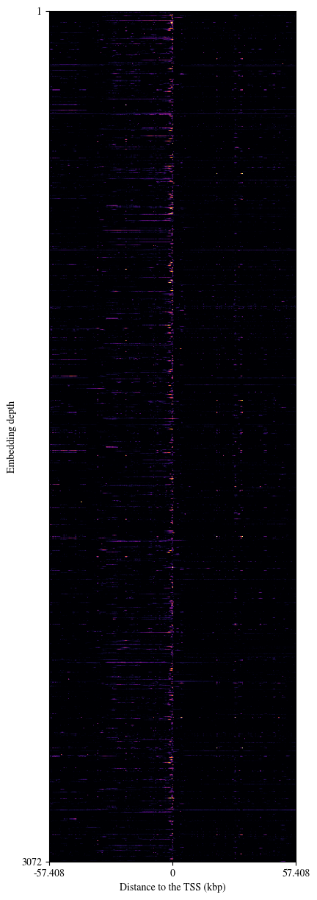
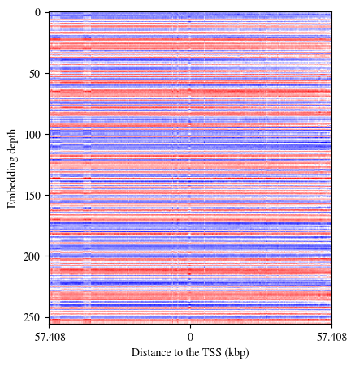
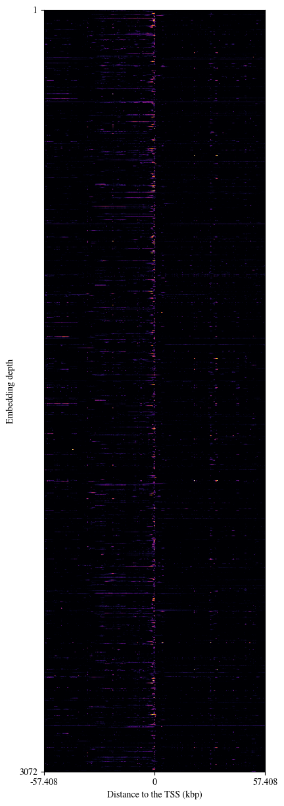
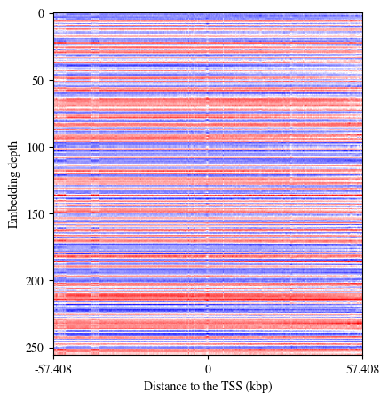

DATA ANALYSIS NOTEBOOK #
This notebook was used to run the analyses and produce most of the images in the paper.
Overview:
Get baseline predictions of the different models:
Bin by bin (pointwise)
Integrating the area of the central gene.
Compare model performances
Input perturbations: How does nascent transcription change when we perturb the inputs?
Input attributions: What is required in the input to predict a given output?
Packages#
import os
import numpy as np
import matplotlib as mpl
import matplotlib.pyplot as plt
import matplotlib.colors as colors
import matplotlib.patches as patches
import pandas as pd
from pathlib import Path
from scipy.integrate import simpson
from scipy.stats import pearsonr, spearmanr
from sklearn.metrics import r2_score
from matplotlib import gridspec
from PIL import Image
from scipy.ndimage import gaussian_filter
import matplotlib.cm as cm
from scipy.ndimage import rotate
plt.rcParams['font.family'] = 'Nimbus Roman'
Functions#
def read_gene_positions(csv_path, resolution=1):
"""
This function reads a csv containing genes and enhancers (entities), and creates a dictionary with the relative coordinates of
all entities to the TSS of the reference gene (central gene), which gives name to the sample.
Args:
csv_path: path to the csv with ref genes, entities and their relative coordinates.
resolution: distance unit we want our relative distances to be given with (1-> bp, 1000->kbp)
Returns:
pos_dict: dictionary given pos_dict[ref gene][entity_name] = (rel_start, rel_end)
"""
# Load the results from a CSV file
df = pd.read_csv(csv_path, sep="\t")
# Initialize the dictionary to store positions
pos_dict = {}
# Filter the DataFrame to get only gene entities
gene_entities = df[df['Entity_ID'].str.startswith('ENSMUSG')] # Adjust the condition according to your data
for _, row in gene_entities.iterrows():
ref_gene_id = row['Ref_gene']
entity_id = row['Entity_ID']
rel_start = int(round(row['Entity_rel_Start'] / resolution))
rel_end = int(round(row['Entity_rel_End'] / resolution))
# Ensure the dictionary has the necessary structure
if ref_gene_id+'_forward' not in pos_dict:
pos_dict[ref_gene_id+'_forward'] = {}
# Store the scaled and rounded start and end positions
pos_dict[ref_gene_id+'_forward'][entity_id+'_forward'] = [rel_start, rel_end]
return pos_dict
def _get_predictions(results_path: Path, N_BINS: int, condition_list: list):
"""
This function reads the prediction files that EIR yields for each target (bin_condition, e.g. -150_ctrl) in the
test (eirpredict) setting. Predictions are then converted into dataframes.
Args:
results_path: path where the predictions are stored
N_BINS: number of the bins to one side of the central bin (200 normally, 57 for the Enformer predictions).
condition_list: list of conditions. As of now ["_ctrl"], but can be extended to other target conditions.
Returns:
ids: names of the samples
predicted: predicted untransformed values
actual: actual values
"""
# Lists to store DataFrames for concatenation
predicted_dfs = []
actual_dfs = []
for condition in condition_list:
for i in range(-N_BINS, N_BINS + 1):
file_path = results_path / f"expression_output/{i}{condition}/predictions.csv"
predictions = pd.read_csv(file_path).set_index('ID')
# Apply ReLU to model predictions
predictions = predictions.clip(lower=0)
# Prepare data for concatenation.
predicted_column = predictions[f"{i}{condition} Untransformed"].rename(f"{i}{condition}")
actual_column = predictions["True Label Untransformed"].rename(f"{i}{condition}")
predicted_dfs.append(predicted_column)
actual_dfs.append(actual_column)
# Concatenate all DataFrames horizontally
predicted = pd.concat(predicted_dfs, axis=1)
actual = pd.concat(actual_dfs, axis=1)
ids = list(predicted.index)
return ids, predicted, actual
def plot_target_predictions(savepath, line_p, line_a, id, rel_start, rel_end, pred_area):
"""
Plot the predicted profiles.
"""
fig, axs =plt.subplots(2, figsize=(8,4), sharex = True)
axs[0].fill_between(np.arange(-200,201),line_p, lw=1, color='royalblue',alpha=.3, label="Predicted expression control")
axs[1].fill_between(np.arange(-200,201),line_a, lw=1, color='silver', alpha=.6, label="Actual expression control")
#plt.plot(np.arange(len(line_p)),line_p, lw=1, color='darkred', label=f"{simpson(line_p[TSS:END])/WIDTH}")
#plt.plot(np.arange(len(line_a)),line_a, lw=1, color='darkgreen', label=f"{simpson(line_a[TSS:END])/WIDTH} {END}")
#plt.plot(TSS,1,'go')
#plt.plot(END,1,'ro')
# for i in range(len(axs)):
# axs[i].set_ylim(-10,50)
# axs[i].set_xlim(-200,200)
# axs[i].set_ylabel("Reads", fontsize=12)
# rect= patches.Rectangle((-75,-5),70,40, edgecolor='k', facecolor='none', linewidth=2)
# axs[i].add_patch(rect)
# if i > 1:
# axs[i].annotate('', xy=(-50,10), xytext=(-50, 30), arrowprops=dict(arrowstyle='-|>,head_width=0.2,head_length=0.5', color='k'))
axs[1].set_xlabel("Distance from TSS (kbp)", fontsize=12)
axs[0].plot([rel_start-200, rel_end-200],[50,50], label=f"Rel_area={pred_area}")
fig.legend(ncol=2, fancybox=True, shadow=True, fontsize=8)
fig.savefig(savepath / f"{id}_prediction.png", dpi=200)
plt.close(fig)
def extend_df(df):
"""
Extend the gene-enhancer relationships df to add meaningful columns, e.g.
* Number of genes between the given enhancer and the promoter of the central gene.
* Whether the enhancer is adjacent to the measured gene or not.
* Area under the central gene (baseline and when the given enhancer is silenced in silico).
"""
# EP_distance calculation
df['EP_distance'] = abs((df['Entity_rel_Start'] + df['Entity_rel_End']) / 2)
# Initialize new columns
df['Genes_in_between'] = 0
df['Adjacent'] = 0
df['Area'] = 0
for index, row in df.iterrows():
# Filter for entities related to the current reference gene and are genes (ENSMUSG)
related_genes = df[(df['Ref_gene'] == row['Ref_gene']) & (df['Entity_ID'].str.startswith('ENSMUSG'))]
# Determine the side of TSS the current entity is on
entity_side = np.sign((row['Entity_rel_Start'] + row['Entity_rel_End']) / 2)
# Count genes that are closer to the TSS than the current entity and on the same side
closer_genes = related_genes[(np.sign((related_genes['Entity_rel_Start'] + related_genes['Entity_rel_End']) / 2) == entity_side) &
(abs((related_genes['Entity_rel_Start'] + related_genes['Entity_rel_End']) / 2) < abs((row['Entity_rel_Start'] + row['Entity_rel_End']) / 2))]
df.loc[index, 'Genes_in_between'] = len(closer_genes)
# Set 'Adjacent' to 1 if there are no genes between this entity and the ref_gene
df.loc[index, 'Adjacent'] = 1 if len(closer_genes) == 0 else 0
return df
def filter_and_extend_gene_enhancer_table(samples_index_path: Path, samples_data_path: Path, perturbed_table_path: Path, chrom_to_keep: str = 'chr4'):
"""
This function filters the genes and gene-enhancer combinations to keep and adds the extra columns required for downstream tasks.
"""
# Load the first table and extract Ref_gene and Entity_ID pairs
samples_index_df = pd.read_csv(samples_index_path)
ref_entity_pairs = set(samples_index_df['ID'].apply(lambda x: tuple(x.rsplit('_', 2)[:2])))
# Additionally, include Ref_gene as both Ref_gene and Entity_ID
ref_genes = set([pair[0] for pair in ref_entity_pairs])
for ref_gene in ref_genes:
ref_entity_pairs.add((ref_gene, ref_gene))
# Load the second table
samples_data_df = pd.read_csv(samples_data_path, sep='\t')
samples_data_df = samples_data_df[(samples_data_df['Ref_gene_chromosome']== chrom_to_keep)] # Filter only genes from test chromosome
samples_data_df = extend_df(samples_data_df)
# Filter rows based on whether the (Ref_gene, Entity_ID) tuple matches the reference set
filtered_df = samples_data_df[
samples_data_df.apply(lambda row: (row['Ref_gene'], row['Entity_ID']) in ref_entity_pairs, axis=1)
]
# Save the filtered DataFrame to a new CSV file if needed
filtered_df.to_csv(perturbed_table_path, index=False)
def calculate_area_gene(line_p, line_a, ID, pos_dict, N_BINS):
"""
Args:
line_p: vector of predicted values
line_a: vector of actual values
ID: reference gene, i.e. sample name
pos_dict: dictionary with relative gene coordinates
N_BINS: which length do we set as a threshold to integrate (in the new resolution).
"""
seq_center = int(len(line_p)//2)
rel_start = seq_center + pos_dict[ID][ID][0] if (seq_center + pos_dict[ID][ID][0]) > 0 else 0
rel_end = seq_center + pos_dict[ID][ID][1] if (seq_center + pos_dict[ID][ID][1]) < 2*N_BINS+1 else 2*N_BINS+1
WIDTH = max(1, int(rel_end - rel_start))
# Appending area
pred_area = simpson(line_p[rel_start:rel_end])/WIDTH
actual_area = simpson(line_a[rel_start:rel_end])/WIDTH
return pred_area, actual_area, rel_start, rel_end
def calculate_correlations(results_path: Path, gene_pos_path: Path, figure_path: Path, input_table_path: Path, N_BINS: int = 200, condition_list = ["_ctrl"], resolution: int = 1000):
"""
This function returns a set of dictionaries containing the actual EU-seq values and the predicted values.
This is done both on a bin by bin basis and integrated over the target gene length (normalized by gene length).
"""
# Storing gene position's dict:
pos_dict = read_gene_positions(gene_pos_path, resolution)
ids, predicted, actual = _get_predictions(results_path, N_BINS, condition_list)
df = pd.read_csv(input_table_path)
# Normalized Area per bin for the target gene (central gene in observation window)
pred_list_A_per_bin_dict = {}
actual_list_A_per_bin_dict = {}
# Predicted and actual EU-seq values in all positions:
pred_list_values_dict = {}
actual_list_values_dict = {}
for condition in condition_list:
pred_list_A_per_bin_dict[condition] = []
actual_list_A_per_bin_dict[condition] = []
pred_list_values_dict[condition] = []
actual_list_values_dict[condition] = []
for ID,line_p,line_a in zip(ids,predicted.values,actual.values):
if ("_rev" not in ID): #Only add the forward strand to the analyses
for condition in condition_list:
# Extend binwise prediction and target lists
pred_list_values_dict[condition].extend(list(line_p))
actual_list_values_dict[condition].extend(list(line_a))
# Extend area predictions
pred_area, actual_area, rel_start, rel_end = calculate_area_gene(line_p, line_a, ID, pos_dict, N_BINS)
pred_list_A_per_bin_dict[condition].extend([pred_area])
actual_list_A_per_bin_dict[condition].extend([actual_area])
# Adding area to extended table:
gene = ID.split('_')[0]
df.loc[(df['Ref_gene'] == gene) & (df['Entity_ID'] == gene),'Area'] = pred_area #Edit existing table
PLOT = True
ID_LIST = ["ENSMUSG00000078673.10_forward","ENSMUSG00000067261.4_forward","ENSMUSG00000028234.6_forward","ENSMUSG00000028280.9_forward","ENSMUSG00000035969.15_forward"]
if PLOT and (ID in ID_LIST):
print(gene, pred_area)
plot_target_predictions(figure_path, line_p, line_p, ID, rel_start, rel_end, pred_area)
df.to_csv(input_table_path, index=False)
return pred_list_A_per_bin_dict, actual_list_A_per_bin_dict, pred_list_values_dict, actual_list_values_dict
def add_gene_area_after_enhancer_perturbation(results_path: Path, gene_pos_path: Path, figure_path: Path, input_table_path: Path, N_BINS: int = 200, condition_list = ["_ctrl"], resolution: int = 1000):
"""
This function reopens the csv file with reference genes and enhancers and edits the area under the reference gene when silencing a given enhancer.
"""
# Storing gene position's dict:
pos_dict = read_gene_positions(gene_pos_path, resolution)
ids, predicted, actual = _get_predictions(results_path, N_BINS, condition_list)
df = pd.read_csv(input_table_path)
for ID,line_p,line_a in zip(ids,predicted.values,actual.values):
seq_center = int(len(line_p)//2)
gene = ID.split('_')[0]
enhancer = ID.split('_')[1]
rel_start = seq_center + pos_dict[gene+'_forward'][gene+'_forward'][0] if (seq_center + pos_dict[gene+'_forward'][gene+'_forward'][0]) > 0 else 0
rel_end = seq_center + pos_dict[gene+'_forward'][gene+'_forward'][1] if (seq_center + pos_dict[gene+'_forward'][gene+'_forward'][1]) < 2*N_BINS+1 else 2*N_BINS+1
WIDTH = max(1, int(rel_end - rel_start))
# Appending area
pred_area = simpson(line_p[rel_start:rel_end])/WIDTH
# Adding area to extended table:
df.loc[(df['Ref_gene'] == gene) & (df['Entity_ID'] == enhancer),'Area'] = pred_area #Edit existing table
PLOT = True
ID_LIST = ["ENSMUSG00000078673.10","ENSMUSG00000067261.4"]
if PLOT and (gene in ID_LIST):
plot_target_predictions(figure_path, line_p, line_a, ID, rel_start, rel_end, pred_area)
df.to_csv(input_table_path, index=False)
def plot_correlations(figure_path: Path, pred_list_values: list, actual_list_values: list, title: str, cmap: colors.Colormap = "afmhot", binlims: tuple = (0,50), density: bool =True, DELTA:bool=False):
"""
This function plots predicted vs. actual values and provides the Spearman and Pearson correlations of the regressions.
The style of the plot changes depending on whether the predictions are at a bin level or a gene level.
"""
# Get the counts histogram to plot correlation with density colormap
counts, xedges, yedges, _ = plt.hist2d(actual_list_values,pred_list_values, bins=[np.linspace(binlims[0],binlims[1],200),np.linspace(binlims[0],binlims[1],200)], density=False)
# Plot regression of single predicted values vs. real
pearson_r = pearsonr(actual_list_values,pred_list_values)[0]
spearman_r = spearmanr(actual_list_values,pred_list_values)[0]
m, b = np.polyfit(actual_list_values, pred_list_values, deg=1)
# Actual fit:
a1, a2, a3 = np.polyfit(actual_list_values, pred_list_values, deg=2)
# Regression from origin:
#m_0 , _, _, _ = np.linalg.lstsq(np.array(actual_list_values)[:,np.newaxis], pred_list_values) #x needs to be a column vector for this function
# Create the figure
fig, ax = plt.subplots(figsize=(4,4))
min_val, max_val, step = (0,10,.1)
if density:
eps= 1
# Counts matrix is transposed: the origin convention for plt.imshow is (top, left), for plt.hist2D is (bottom,left)
counts[counts < eps] =1
hist = ax.imshow(counts.T, origin='lower', extent=[xedges[0], xedges[-1], yedges[0], yedges[-1]], cmap=cmap, norm=colors.LogNorm())
_ = fig.colorbar(hist)
_ = ax.axline(xy1=(0, b), slope=m, label=f'Linear fit:\n$ y = {m:.3f}x {b:+.3f}$\n$r_p:{pearson_r:.4f}$\n$r_s:{spearman_r:.4f}$', color="royalblue", ls="-", lw=1)
#_ = ax.plot(np.arange(min_val,max_val,step), a1*(np.arange(min_val,max_val,step)**2)+a2*(np.arange(min_val,max_val,step))+a3, color='royalblue', ls = "--", lw=1, label= f"Polynomial fit:\n$y={a1:.3f}x^2+{a2:.3f}x+{a3:.3f}$")
_ = ax.axis("scaled")
_ = ax.set_xlim(min_val,max_val)
_ = ax.set_ylim(min_val,max_val)
_ = ax.set_xlabel("log$_2$(True +1)")
_ = ax.set_ylabel("log$_2$(Predicted +1)")
fig.legend(bbox_to_anchor=(.48,.8), fancybox=True, shadow=False, fontsize=7)
else:
_ = ax.plot(actual_list_values,pred_list_values, lw=0, marker='o', markersize=1, markeredgewidth=0, color='k')
_ = ax.axis("scaled")
_ = ax.axline(xy1=(0, b), slope=m, label=f'Linear fit:\n$ y = {m:.3f}x {b:+.3f}$\n$r_p:{pearson_r:.4f}$\n$r_s:{spearman_r:.4f}$', color="royalblue", ls="-", lw=1)
#ax.plot(np.arange(-20,200,1), a1*(np.arange(-20,200,1)**2)+a2*(np.arange(-20,200,1))+a3, color='royalblue', ls = "--", lw=1, label= f"Polynomial fit:\n$y={a1:.3f}x^2+{a2:.3f}x{a3:.3f}$")
if DELTA:
_ = ax.set_xlim(-20,20)
_ = ax.set_ylim(-20, 20)
_ = ax.set_xlabel("Actual $\Delta_{exp}$ (reads/kbp)")
_ = ax.set_ylabel("Predicted $\Delta_{exp}$ (reads/kbp)")
fig.legend(bbox_to_anchor=(.53,.87), fancybox=True, shadow=True, fontsize=8)
else:
_ = ax.set_xlim(0,200)
_ = ax.set_ylim(0, 200)
_ = ax.set_xlabel("Actual averaged expression (reads/kbp)")
_ = ax.set_ylabel("Predicted averaged expression (reads/kbp)")
fig.legend(bbox_to_anchor=(.53,.87), fancybox=True, shadow=True, fontsize=8)
#ax.plot(np.arange(0,500,1), np.arange(0,500,1), color='k', ls = "dashed", lw=1)
fig.savefig(figure_path / f"Regression_histogram_{title}.png", dpi=200, bbox_inches='tight')
plt.close(fig)
def plot_chromatin_state_combinations(array_path: Path, figure_path: Path, skip_n_bins: int):
"""
This function is aimed to visualize the different combinations of values for different chromatin marks, which define the chromatin states.
"""
H3K4me3 = np.array([])
H3K27ac = np.array([])
H3K27me3 = np.array([])
for file in os.scandir(array_path):
if "_rev" not in file.name:
array = np.load(file)
# Adding mark enrichment values to a long array
H3K4me3 = np.concatenate((H3K4me3,array[1][::skip_n_bins]), axis=0)
H3K27ac = np.concatenate((H3K27ac,array[2][::skip_n_bins]), axis=0)
H3K27me3 = np.concatenate((H3K27me3,array[3][::skip_n_bins]), axis=0)
# Plotting the 3d combinations at all sites
scaling_factor = 1 # Inputs were directly given in reads
altitude, azimuth = 45,45
fig = plt.figure(figsize=(7, 7))
ax = fig.add_subplot(projection="3d")
ax.view_init(altitude, azimuth)
ax.grid(False)
#ax.plot_surface(x_val, y_val, avg_att_mat, rstride=1,cstride=1,linewidth=0, cmap="terrain")#, vmin=-2e-4, vmax=2e-4)
ax.scatter(H3K4me3*scaling_factor, H3K27ac*scaling_factor, H3K27me3*scaling_factor,linewidth=0, alpha=.5, marker="o", edgecolors="none", c="k", s=.1, label="All states combined")#, vmin=-2e-4, vmax=2e-4)
# Directions
zdirs = ((-1,-.2,0), 'y','z','y','y')
xs = (250, 0,60,0, 30)
ys = (10, 50, 10,20,120)
zs = (2, -20, 50,17,5)
labels = ("Active promoters", "Active enhancers", "Silenced\nchromatin","$P2$","P1")
label_colors = ("#ff0000","blue","darkgreen","purple", "goldenrod")
for zdir, x, y, z, label, c in zip(zdirs, xs, ys, zs, labels, label_colors):
ax.text(x, y, z, label, zdir, color=c)
# Arrow towards silenced branch:
ax.quiver(0, 100, 5, 0,-20,0, color='goldenrod',lw=.7)
ax.quiver(0, 50, 5, 0,-20,0, color='goldenrod',lw=.7)
ax.quiver(30, 100, 5, 0,-20,0, color='goldenrod',lw=.7)
ax.quiver(30, 50, 5, 0,-20,0, color='goldenrod',lw=.7)
# Inwards arrow towards silenced branch for P2:
ax.quiver(-10, 20, 8, -10,-20,0, color='purple',lw=.7)
ax.quiver(-10, 20, -2, -10,-20,0, color='purple',lw=.7)
#ax.quiver(50, 10, 10, -20,0,0, color='purple',lw=.7)
ax.set_xlabel("H3K4me3")
ax.set_xticks([0,200,400],[0,200,400], rotation=40)
ax.set_ylabel("H3K27ac")
ax.set_yticks([0,100,200],[0,100,200], rotation=-40)
ax.set_zlabel("H3K27me3", rotation=180)
ax.set_zticks([0,40,80],[0,40,80])
fig.subplots_adjust(left=0.2, right=0.9, top=.95, bottom=0.05)
fig.savefig(figure_path / "chromstates.png", dpi=200)
plt.close(fig)
def read_target_attributions(results_path: Path,
figure_path: Path,
n_central_bins: int,
track_dict: dict,
l_in:int = 10001,
n_out:int=401,
n_in: int=4,
TRAIN_ATTR: bool = True,
SPLIT: int = None):
"""
This function is aimed to read attribution arrays from the chromatin landscape branch. Attribution arrays score the
contribution of each position in the input arrays (4,10.001) towards each output node/position (401).
Args:
results_path: path where the attribution arrays are stored.
figure_path: path where we want to store the outputs
n_central_bins: number of central bins (from -N_BINS to N_BINS+1)
track_dict: dictionary containing the names of the tracks and plot details
l_in: input length
n_out: number of output nodes
n_in: number of input channels
TRAIN_ATTR: whether this is a training or test run (folder structure changes).
SPLIT: if Train, we need to know which of the stored batches it is
Returns:
Plots with attribution scores.
"""
figure_path.mkdir(exist_ok=True, parents=True)
N_BINS = n_central_bins // 2 # Number of bins from TSS that we want on one side
N_IN_BINS = l_in // 2
x_val = np.arange(-N_IN_BINS,N_IN_BINS+1)
xlim = (-500,500)
# Getting attributions:
condition_list = ["_ctrl"]
landscape_avg = {condition : np.zeros((n_in,l_in)) for condition in condition_list}
for i in range(-N_BINS, N_BINS + 1):
for condition in condition_list:
# CHROMATIN MARK ATTRIBUTIONS:
added_folders = f"/samples/{SPLIT}" if TRAIN_ATTR else "" # Different folder structure
att_path = Path(results_path / f"{i}{condition}{added_folders}/attributions/gene_expression/{i}{condition}.npy")
if os.path.exists(att_path):
attributions = np.load(att_path)
#if (i == -73) and (condition == "_ctrl"):
fig, axs = plt.subplots(4, figsize=(8,2.7))
for j,key in enumerate(track_dict.keys()):
name = track_dict[key]["name"]
axs[j].plot(x_val, abs(attributions[j]), label=name, lw=0, marker='o', markersize=0.8, markeredgecolor="none", color=track_dict[key]["color"])
axs[j].set_xlim((-5000,5001))
axs[j].set_ylim((0,np.max(attributions[1])))
axs[j].set_yticks([])
axs[-1].set_yticks([0,np.max(attributions[1])],[0,1])
fig.savefig(figure_path / f"Chromatin_landscape_attributions_{i}_ctrl.png",dpi=200)
plt.close(fig)
# Add a small phase to remove high frequency fluctuations:
eps = 10*np.random.rand(1)*np.random.choice([-1,1])
centered_attr = np.roll(attributions, -10*i+int(eps),axis=1)
landscape_avg[condition] += 1/n_out*(abs(centered_attr))
SCALING_FACTOR = np.max([landscape_avg[cond] for cond in condition_list])
for condition in condition_list:
fig, ax = plt.subplots(figsize=(8,2.7))
sub_axes = plt.axes([.615, .57, .27, .27])
for i,key in enumerate(track_dict.keys()):
name = track_dict[key]["name"]
ax.plot(x_val, landscape_avg[condition][i]/SCALING_FACTOR, label=name, lw=0, marker='o', markersize=2, markeredgecolor="none", color=track_dict[key]["color"])
sub_axes.plot(x_val, landscape_avg[condition][i]/SCALING_FACTOR, label=name, lw=0,marker='o',markersize=.5,markeredgecolor="none", color=track_dict[key]["color"])
#sub_axes.set_xlim(xlim)
sub_axes.set_xticks(np.arange(-5000,5001,5000),np.arange(-500,501,500))
sub_axes.set_xlim((-5000,5000))
sub_axes.set_yticks([])
ax.set_xlim(xlim)
ax.set_ylim(0,1) #(0,.002))
ax.legend(loc='upper left')
ax.set_ylabel("Attribution score")
ax.set_xlabel("Distance to the predicted locus (kbp)")
plt.subplots_adjust(bottom=0.2)
ax.set_xticks(np.arange(-400,401,100),np.arange(-40,41,10))
fig.savefig(figure_path / f"Landscape_absolute_average_{condition}.png", dpi=200)
plt.close(fig)
def model_comparison(figure_path: Path, performance_dict: dict, color_list: list):
"""
Creates bar plots comparin pearson and spearman correlations of the different models.
"""
fig = plt.figure(figsize=(2.5,5))
pos = 1
shift = 8
for i,model in enumerate(performance_dict.keys()):
# if i == 0:
# for j in range(2):
# plt.plot(pos,complementary_dict[i]["Spearman"], marker='d', color='k', markersize=10, markeredgewidth=0)
# plt.plot(pos+shift,complementary_dict[i]["Pearson"], marker='d', color='k', markersize=10, markeredgewidth=0)
plt.bar(pos, performance_dict[model]["Spearman"], label=f"{model}", color=color_list[i])
plt.bar(pos+shift, performance_dict[model]["Pearson"], color=color_list[i])
#plt.plot(pos,performance_dict[model]["Spearman"], marker='d', color='k', markersize=3, markeredgewidth=0)
#plt.plot(pos+shift,performance_dict[model]["Pearson"], marker='d', color='k', markersize=3, markeredgewidth=0)
pos += 1
plt.xticks([3.5,11.5],["Spearman","Pearson"])
plt.legend(loc="lower left", bbox_to_anchor=(-0.04,1.08), fontsize=6)
plt.ylim((0,1))
plt.ylabel(" Binwise correlation for log$_2$(reads +1)")
plt.tight_layout()
fig.savefig(figure_path / "Model_comparison.png", dpi=200)
plt.close(fig)
def model_comparison_II(figure_path: Path, performance_dicts: list , color_list: list):
"""
Creates bar plots comparing pearson and spearman correlations of the different models.
"""
fig = plt.figure(figsize=(4,4))
for j,performance_dict in enumerate(performance_dicts):
print(performance_dict)
marker = 'o' if j== 0 else '^'
task = 'binwise' if j==0 else 'area'
for i,model in enumerate(performance_dict.keys()):
plt.plot(performance_dict[model]["Pearson"],performance_dict[model]["Spearman"], color=color_list[i], marker=marker,lw=0, label=f'{model} {task}')
plt.legend(loc="lower center", ncols=2, fontsize=6)
plt.ylim((.4,1))
plt.xlim((.4,1))
plt.ylabel("Spearman")
plt.xlabel("Pearson")
plt.tight_layout()
fig.savefig(figure_path / "Model_comparison_II.png", dpi=200)
plt.close(fig)
####################### ATTRIBUTIONS ####################
def plot_microc_original_and_rotated(pathlist: list, figure_path: Path, num_bins: int, window_of_observation: float, name: str):
"""
This function plots the Micro-C contact maps (both original and rotated-cropped) given a sample name.
"""
bin_per_kbp = num_bins/window_of_observation #Unit (bin/kbp)
max_shift = int(200*bin_per_kbp) # Distance to crop because it was rolled from the other side
for p,path in enumerate(pathlist):
for sample in os.scandir(path):
if name in sample.name: # Nice example: "ENSMUST00000105369.7.npy" common "ENSMUST00000001565.14.npy"
microc_map = np.load(sample)
fig = plt.figure(figsize=(8,4))
#plt.imshow(microc_map, cmap="YlOrRd")
# plt.plot(200*bin_per_kbp,50,marker="x")
# plt.plot(-200*bin_per_kbp+313,50,marker="x")
# plt.plot(313,50,marker="x")
plt.imshow(microc_map, cmap="YlOrRd", vmin = -5, vmax = 0)
# Real scale
center_bin = np.shape(microc_map)[1]//2
bin_pos = np.arange(13,np.shape(microc_map)[1],50)
kbp_per_bin = 1/bin_per_kbp
bin_val = (bin_pos-np.shape(microc_map)[1]//2)*kbp_per_bin #Unit (kbp/bin)
bin_val = ["%.2f"%item for item in bin_val]
plt.xticks(bin_pos,bin_val, rotation=90, fontsize=8)
plt.xlabel("Distance in 1D sequence (kbp)", fontsize=10)
# Careful! Scale is not the distance between points but the distance between interacting points in 1D!
bin_pos = np.arange(0,np.shape(microc_map)[0],25)
bin_val = 2*bin_pos*kbp_per_bin #*(kbp_per_bin) + np.shape(avg_att_mat)[0]
bin_val = ["%.2f"%item for item in bin_val]
plt.yticks(bin_pos,bin_val, fontsize=8)
if p == 0:
plt.xticks([])
plt.yticks([])
plt.ylabel("Separation between\n interacting elements\n in 1D sequence (kbp)", fontsize=10)
plt.colorbar()
fig.savefig(figure_path / f"MicroC_input_{name}_{p}.png", dpi=200)
plt.close(fig)
def plot_microc_attributions(figure_path, sample_ids, num_bins, window_of_observation, ATTR_type_list, conditions, sigma):
"""
Plot the attribution maps for micro-c matrices
"""
bin_per_kbp = num_bins/window_of_observation
print(bin_per_kbp)
max_shift = int(200*bin_per_kbp) # Distance to crop because it was rolled from the other side
avg_att_mat_dict = {}
for condition in conditions:
avg_att_mat_dict[condition] = {}
for ATTR_type in ATTR_type_list:
avg_att_mat_dict[condition][ATTR_type] = np.zeros((129,626))
for condition in conditions:
for i in sample_ids:
#path = Path(f"../runs/training_runs/gene_expression_exformer_unlimited_all_rotated/results/expression_output/{i}{condition}/samples/17880/attributions/contact_maps/{i}{condition}.npy")
path = Path(f"../runs/test_runs/gene_expression_microc_rotated_pure_conv/expression_output/{i}{condition}/attributions/contact_maps/{i}{condition}.npy")
att_mat = np.load(path)
att_mat_rolled = np.roll(att_mat,-int(i*bin_per_kbp), axis = 1)
avg_att_mat_dict[condition]["abs"] += 1/(len(sample_ids))*abs(att_mat_rolled)
avg_att_mat_dict[condition]["signed"] += 1/(len(sample_ids))*att_mat_rolled
if (i==199):
fig_1 = plt.figure(figsize=(8,3))#(11.5, 5))
gs = gridspec.GridSpec(2, 2, hspace=.2, wspace=.1, width_ratios=(5,0.1))
ax = fig_1.add_subplot(gs[0, 0])
ax.set_xticks([])
fig_display = ax.imshow(np.flip(att_mat,axis=0), cmap="seismic", vmin = -0.0002, vmax=0.0002)
ax_II = fig_1.add_subplot(gs[1, 0])
fig_display = ax_II.imshow(np.flip(att_mat_rolled,axis=0), cmap="seismic", vmin = -0.0002, vmax=0.0002)
cax = fig_1.add_subplot(gs[0, 1])
# Add the colorbar
plt.colorbar(fig_display, cax=cax)
plt.tight_layout()
fig_1.savefig(figure_path / f"Signed_attributions_{i}{condition}.png", dpi=200)
plt.close(fig_1)
for CONDITION in conditions:
for ATTR_type in ATTR_type_list:
avg_att_mat = avg_att_mat_dict[condition][ATTR_type]
avg_att_mat = gaussian_filter(avg_att_mat, sigma=sigma)
avg_att_mat = np.flip(avg_att_mat[:,max_shift:-max_shift], axis = 0)
# Assuming 'img' is your image data
y_projected_mat = np.mean(avg_att_mat, axis=0) # Compress along x-axis
x_projected_mat = np.mean(avg_att_mat, axis=1) # Compress along y-axis
fig = plt.figure(figsize=(8,3))#(11.5, 5))
gs = gridspec.GridSpec(1, 2, hspace=.2, wspace=.1, width_ratios=(5,0.1))
# Main image
ax = fig.add_subplot(gs[0, 0])
# Create an axis for the colorbar
cax = fig.add_subplot(gs[0, 1])
if ATTR_type == "abs":
img_display = ax.imshow(avg_att_mat, aspect='auto', cmap="inferno", vmin=0, vmax=0.5e-4)
cbar = plt.colorbar(img_display, cax=cax)
cbar.set_ticks([0,5e-5])
cbar.set_ticklabels([0,1])
else:
img_display = ax.imshow(avg_att_mat, aspect='auto', cmap="seismic", vmin=-0.5e-4, vmax=0.5e-4)
cbar = plt.colorbar(img_display, cax=cax)
cbar.set_ticks([-5e-5,0,5e-5])
cbar.set_ticklabels([-1,0,1])
# Plot vertical dashed line
ref_y = np.arange(len(avg_att_mat))
ref_x = np.shape(avg_att_mat)[1]//2*np.ones_like(ref_y)
im = ax.plot(ref_x,ref_y, "k--")
# Plot diagonals from prediction point:
diag_x = np.arange(np.shape(avg_att_mat)[0]) + np.shape(avg_att_mat)[1]//2
diag_x2 = -np.arange(np.shape(avg_att_mat)[0]) + np.shape(avg_att_mat)[1]//2
diag_y = np.arange(np.shape(avg_att_mat)[0])
ax.plot(diag_x,diag_y, "b--", lw=.5)
ax.plot(diag_x2,diag_y, "b--", lw=.5)
# Real scale
bin_pos = np.arange(11,np.shape(avg_att_mat)[1],25)
#bin_val = (bin_pos-np.shape(avg_att_mat)[1]//2)*kbp_per_bin
kbp_per_bin = 1/bin_per_kbp
bin_val = (bin_pos-np.shape(avg_att_mat)[1]//2)*kbp_per_bin #Unit (kbp/bin)
bin_val = ["%.2f"%item for item in bin_val]
ax.set_xticks(bin_pos,bin_val, rotation=90)
# Careful! Scale is not the distance between points but the distance between interacting points in 1D!
bin_pos = np.arange(0,np.shape(avg_att_mat)[0],25)
bin_val = 2*bin_pos*kbp_per_bin # Unit (kbp/bin)
bin_val = ["%.2f"%item for item in bin_val]
ax.set_yticks(bin_pos,bin_val)
ax.set_xlabel("Distance from the predicted point (kbp)",fontsize= 12)
ax.set_ylabel("Separation between\n interacting elements\n in 1D sequence (kbp)",fontsize= 12)
# # Top plot
# axb = fig.add_subplot(gs[0, 0], sharex=ax)
# axb.plot(np.arange(len(y_projected_mat)), y_projected_mat, color='k')
# plt.setp(axb.get_xticklabels(), visible=False)
# axb.set_ylabel("Averaged attribution score", fontsize= 8)
# # Right plot
# axl = fig.add_subplot(gs[1, 1], sharey=ax)
# axl.plot(x_projected_mat, np.arange(len(x_projected_mat)), color='k')
# plt.setp(axl.get_yticklabels(), visible=False)
# axb.set_ylabel("Averaged attribution score", fontsize = 8)
plt.subplots_adjust(bottom=0.25, left=.20)
plt.tight_layout()
fig.savefig(figure_path / f"Structural_attributions_{ATTR_type}_{CONDITION}_{sigma}.png", dpi=200)
plt.close(fig)
##### Model benchmarks ######
def plot_benchmark_models_predictions(data_and_path_dict, results_path,target_samples, condition_list, READ_SCALING_FACTOR,PLOT_LIST, gene_pos_path, resolution, cmap = "binary"):
"""
This function is aimed to compare the predicted profiles and performances between different models.
"""
CREATE_DFS = True
param_dict = {"CLASTER":{"n_central_bins":401,"N_BINS":200,"OUT_LEN":401},
"hyenadna":{"n_central_bins":31,"N_BINS":15,"OUT_LEN":31},
"Enformer":{"n_central_bins":115,"N_BINS":57,"OUT_LEN":115}}
N_SAMPLES = 1295
pos_dict = read_gene_positions(gene_pos_path, resolution) # Storing gene position's dict:
### Claster and targets
MODEL = "CLASTER" #"Enformer"
ids, predicted, actual = _get_predictions(results_path, param_dict[MODEL]["N_BINS"], condition_list)
ids = ids[::2] # Keep only forward!
predicted = predicted[~predicted.index.str.contains('_rev')].sort_index()
actual = actual[~actual.index.str.contains('_rev')].sort_index()
### hyenadna and Enformer
MODEL = "hyenadna"
pred_list_df_hyena= pd.DataFrame(data_and_path_dict[MODEL]["predictions"].reshape(N_SAMPLES,param_dict[MODEL]["OUT_LEN"]), columns = [f"{i}{cond}" for cond in condition_list for i in range(-param_dict[MODEL]["N_BINS"],param_dict[MODEL]["N_BINS"]+1)], index=target_samples.index).sort_index()
actual_list_df_hyena = pd.DataFrame(data_and_path_dict[MODEL]["actual"].reshape(N_SAMPLES,param_dict[MODEL]["OUT_LEN"]), columns = [f"{i}{cond}" for cond in condition_list for i in range(-param_dict[MODEL]["N_BINS"],param_dict[MODEL]["N_BINS"]+1)], index=target_samples.index).sort_index()
MODEL = "Enformer"
pred_list_df_enformer= pd.DataFrame(data_and_path_dict[MODEL]["predictions"].reshape(N_SAMPLES,param_dict[MODEL]["OUT_LEN"]), columns = [f"{i}{cond}" for cond in condition_list for i in range(-param_dict[MODEL]["N_BINS"],param_dict[MODEL]["N_BINS"]+1)], index=target_samples.index).sort_index()
actual_list_df_enformer = pd.DataFrame(data_and_path_dict[MODEL]["actual"].reshape(N_SAMPLES,param_dict[MODEL]["OUT_LEN"]), columns = [f"{i}{cond}" for cond in condition_list for i in range(-param_dict[MODEL]["N_BINS"],param_dict[MODEL]["N_BINS"]+1)], index=target_samples.index).sort_index()
###
counter = 0
# Normalized Area per bin for the target gene (central gene in observation window)
A_per_gene_dict = {"Enformer":{"Predicted":[],"Actual":[]},"hyenadna":{"Predicted":[],"Actual":[]}}
for id, line_pc, line_ac, line_ph, line_pe in zip(ids,predicted.values,actual.values,pred_list_df_hyena.values, pred_list_df_enformer.values):
#if counter < 50:
MODEL = "Enformer"
N_BINS = param_dict[MODEL]["N_BINS"]
MODEL_SHIFT = (param_dict["CLASTER"]["n_central_bins"] - param_dict[MODEL]["n_central_bins"])//2
#MODEL_SHIFT = (param_dict["CLASTER"]["n_central_bins"] - param_dict["hyenadna"]["n_central_bins"])//2
#ENFORMER_SHIFT = (param_dict["Enformer"]["n_central_bins"] - param_dict["hyenadna"]["n_central_bins"])//2
pred_area_e, actual_area_e, *_ = calculate_area_gene(line_pe, line_ac[MODEL_SHIFT:-MODEL_SHIFT], id, pos_dict, N_BINS)
#pred_area_e, actual_area_e, *_ = calculate_area_gene(line_pe[ENFORMER_SHIFT:-ENFORMER_SHIFT], line_ac[MODEL_SHIFT:-MODEL_SHIFT], id, pos_dict, N_BINS)
A_per_gene_dict[MODEL]["Predicted"].append(pred_area_e)
A_per_gene_dict[MODEL]["Actual"].append(actual_area_e)
MODEL = "hyenadna"
N_BINS = param_dict[MODEL]["N_BINS"]
MODEL_SHIFT = (param_dict["CLASTER"]["n_central_bins"] - param_dict[MODEL]["n_central_bins"])//2
pred_area_h, actual_area_h, *_ = calculate_area_gene(line_ph, line_ac[MODEL_SHIFT:-MODEL_SHIFT], id, pos_dict,N_BINS)
A_per_gene_dict[MODEL]["Predicted"].append(pred_area_h)
A_per_gene_dict[MODEL]["Actual"].append(actual_area_h)
if id in PLOT_LIST:
fig, axs =plt.subplots(nrows=4,ncols=1, figsize=(8,4), sharex = True)
MODEL = "CLASTER"
axs[2].fill_between(np.arange(-param_dict[MODEL]["N_BINS"],param_dict[MODEL]["N_BINS"]+1),line_pc[:param_dict[MODEL]["n_central_bins"]]*READ_SCALING_FACTOR, lw=1, color='silver',alpha=.8, label="CLASTER")
axs[3].fill_between(np.arange(-param_dict[MODEL]["N_BINS"],param_dict[MODEL]["N_BINS"]+1),line_ac[:param_dict[MODEL]["n_central_bins"]]*READ_SCALING_FACTOR, lw=1, color='black', alpha=.5, label="EU-seq target")
axs[3].plot([-param_dict[MODEL]["N_BINS"]+MODEL_SHIFT,-param_dict[MODEL]["N_BINS"]+ MODEL_SHIFT+param_dict["hyenadna"]["n_central_bins"]],[10,10],color='k')
#axs[2][1].fill_between(np.arange(-param_dict[MODEL]["N_BINS"],param_dict[MODEL]["N_BINS"]+1),line_pc[param_dict[MODEL]["n_central_bins"]:]*READ_SCALING_FACTOR, lw=1, color='royalblue', alpha=.9, label="Predicted expression treated")
#axs[3][1].fill_between(np.arange(-param_dict[MODEL]["N_BINS"],param_dict[MODEL]["N_BINS"]+1),line_ac[param_dict[MODEL]["n_central_bins"]:]*READ_SCALING_FACTOR, lw=1, color='k', alpha=.6, label="Actual expression treated")
MODEL = "hyenadna"
axs[0].fill_between(np.arange(-param_dict[MODEL]["N_BINS"],param_dict[MODEL]["N_BINS"]+1),line_ph[:param_dict[MODEL]["n_central_bins"]]*READ_SCALING_FACTOR, lw=1, color='silver',alpha=.8,label=f"HyenaDNA-32k {pred_area_h}-{actual_area_h}" )
#axs[0][1].fill_between(np.arange(-param_dict[MODEL]["N_BINS"],param_dict[MODEL]["N_BINS"]+1),line_ph[param_dict[MODEL]["n_central_bins"]:]*READ_SCALING_FACTOR, lw=1, color='royalblue', alpha=.9)
MODEL = "Enformer"
axs[1].fill_between(np.arange(-param_dict[MODEL]["N_BINS"],param_dict[MODEL]["N_BINS"]+1),line_pe[:param_dict[MODEL]["n_central_bins"]]*READ_SCALING_FACTOR, lw=1, color='silver',alpha=.8,label=f"Enformer {pred_area_e}-{actual_area_e}")
#axs[1][1].fill_between(np.arange(-param_dict[MODEL]["N_BINS"],param_dict[MODEL]["N_BINS"]+1),line_pe[param_dict[MODEL]["n_central_bins"]:]*READ_SCALING_FACTOR, lw=1, color='royalblue', alpha=.9)
model_list = ['HyenaDNA-32k','Enformer','CLASTER','Target']
for i in range(len(axs)):
axs[i].set_ylim((0,50))
axs[i].legend()
axs[3].set_xlabel(f"Distance from TSS (kbp)", fontsize=12)
axs[3].set_ylabel("Reads", fontsize=12)
#fig.legend( bbox_to_anchor=(.84,1.003),ncol=2, fancybox=True, shadow=True, fontsize=8)
fig.savefig(Path("../figures/supplementary_figures/") / f"{id}.png", dpi=200)
plt.close(fig)
counter += 1
# Correlations Hyena:
MODEL = "hyenadna"
plot_correlations(data_and_path_dict[MODEL]["figure_path"], np.log2(READ_SCALING_FACTOR*pred_list_df_hyena.values[:,:param_dict[MODEL]["n_central_bins"]].flatten()+1), np.log2(READ_SCALING_FACTOR*actual_list_df_hyena.values[:,:param_dict[MODEL]["n_central_bins"]].flatten()+1), title=f"{MODEL}_performance_ctrl_smoothL1.png", cmap= "binary", binlims= (0,10), density =True, DELTA=False)
plot_correlations(data_and_path_dict[MODEL]["figure_path"], A_per_gene_dict[MODEL]["Predicted"],A_per_gene_dict[MODEL]["Actual"] , title=f"{MODEL}_performance_ctrl_gene_avg.png", cmap= "binary", binlims= (0,10), density =False, DELTA=False)
# Correlations Enformer:
MODEL = "Enformer"
plot_correlations(data_and_path_dict[MODEL]["figure_path"], np.log2(READ_SCALING_FACTOR*pred_list_df_enformer.values[:,:param_dict[MODEL]["n_central_bins"]].flatten()+1), np.log2(READ_SCALING_FACTOR*actual_list_df_enformer.values[:,:param_dict[MODEL]["n_central_bins"]].flatten()+1), title=f"{MODEL}_performance_ctrl_smoothL1.png", cmap= "binary", binlims= (0,10), density =True, DELTA=False)
plot_correlations(data_and_path_dict[MODEL]["figure_path"], A_per_gene_dict[MODEL]["Predicted"],A_per_gene_dict[MODEL]["Actual"] , title=f"{MODEL}_performance_ctrl_gene_avg.png", cmap= "binary", binlims= (0,10), density =False, DELTA=False)
def plot_perturbed_profiles(results_path: Path, figure_path: Path, N_BINS: int, SCALE : int, sample_name: str, PERT_TYPE: str):
ids, predicted, actual = _get_predictions(results_path, N_BINS, condition_list = ["_ctrl"])
cmap = plt.cm.terrain # define the colormap
# extract all colors from the .jet map
cmaplist = [cmap(i) for i in range(cmap.N)]
# force the first color entry to be grey
# create the new map
cmap = mpl.colors.LinearSegmentedColormap.from_list(
'Custom cmap', cmaplist, cmap.N)
norm = mpl.colors.Normalize(vmin=0, vmax=18)
fig = plt.figure(figsize=(8,2))
i = 0
for index in predicted.index:
ref_gene, entity_id, _ = index.split('_')
if sample_name in index:
# Get the normalized color index for the current loop iteration
color = cmap(norm(i))
plt.plot(np.arange(-N_BINS,N_BINS+1), predicted.loc[f"{index}"], color=color, lw=.8)
start = table[(table["Ref_gene"] == ref_gene) & (table["Entity_ID"] == entity_id)]['Entity_rel_Start']/SCALE
end = table[(table["Ref_gene"] == ref_gene) & (table["Entity_ID"] == entity_id)]['Entity_rel_End']/SCALE
plt.plot([start,end],i+np.array([25,25]), color=color, lw=1.5)
plt.xlabel("Distance from TSS (kbp)")
plt.xlim((-200,200))
plt.ylim((0,40))
plt.ylabel("Reads")
i += 1
fig.tight_layout()
fig.savefig(figure_path / f"Perturbed_profiles_{sample_name}_{PERT_TYPE}.png", dpi=200)
# Latent representation analysis
def visualize_filters(path: Path,
savepath: Path,
first_validation_sample_index: int = 0,
last_validation_sample_index: int=100,
step: int = 1,
layer_name: str = ""):
"""
This function plots the intermediate outputs of the network. This is useful to understand what filters
are being created and what are their roles.
"""
import matplotlib as mpl
latents = np.load(path / "latents.npy")
for i,sample in enumerate(latents[first_validation_sample_index:last_validation_sample_index:step]):
sample_name = sample[1]
sample_values = sample[0]
n_filters_in_layer = sample_values.shape[0]
print(np.min(sample_values), np.max(sample_values))
fig, axs = plt.subplots(n_filters_in_layer, figsize=(10,10))
#fig_stack, axs_stack = plt.subplots(n_filters_in_layer,1, figsize=(8,8))
for j,filter in enumerate(sample_values):
x = j//int(n_filters_in_layer/4)
y = j%int(n_filters_in_layer/4)
#filter = rotate(filter, angle=45, reshape=False)
im = axs[j].imshow(filter, cmap="seismic")
#plt.colorbar(cm.ScalarMappable( cmap="inferno"), ax=axs[j//4, j%4])
#cb = plt.colorbar(im, ax=axs[x, y], fraction=0.046, pad=0.04)
#cb.ax.tick_params(labelsize=12)
#axs[x,y].set_title(f"filter {j}", fontsize=12)
axs[j].set_xticks([])
axs[j].set_yticks([])
# Stacked plot
# fx = np.zeros(len(filter))
# shift = -int(len(filter)/2)
# for i in range(len(filter)):
# roll_im = np.roll(filter[i],shift-i)
# fx += roll_im/len(filter)
# axs_stack[j].plot(np.arange(len(fx)),fx, lw=.5, label=j)
# gradient = np.convolve(fx,np.array([1,0,-1]))
# axs_stack[j].plot(np.arange(len(gradient)), gradient, ls = "dashed",lw=.5, label=f"{j}_conv")
fig.savefig(savepath / f"{sample_name}_{layer_name}.png", dpi=250)
#fig_stack.savefig(savepath / f"{sample_name}_{layer_name}_stacked.png", dpi=250)
plt.close(fig)
return fig
Model performance on the baseline prediction task #
Figure 1 and related supplementary figures
Note: ⏰ This took 42 min when analysing all genes and enhancers in chr4:
We will first add meaningful columns to the gene-enhancer coordinate information table like EP-distance, number of genes between E and P… We will do that for the samples in the test set (chr4). This information will be used in the following sections.
samples_index_path = Path("../targets/perturbed_targets.csv")
samples_data_path = Path("../annotations/gene_enhancer_relationships_corrected.tsv")
perturbed_table_path = Path("../annotations/gene_enhancer_relationships_perturbed.csv")
filter_and_extend_gene_enhancer_table(samples_index_path, samples_data_path, perturbed_table_path)
Now we can load the predictions and compare them with the ground truth values. We will do that for point-wise predictions and also integrating the area under each reference gene. The area under the curve within the central gene’s coordinates, a proxy for length normalized nascent expression, will be added to the table that we just created.
# Compute the correlations and add area for the central gene to the table
results_path = Path("../runs/test_runs/gene_expression_only_chrom_pure_conv/") #Path("../runs/test_runs/gene_expression_only_chrom_pure_conv/") #chrom_and_microc_with_attention") #Path("/Users/wjq311/Desktop/PhD/Enhancer_logic_project/Data/results_all/results_no_H3K27ac_uncoupled/expression_output")
gene_pos_path: Path = Path("../annotations/gene_enhancer_relationships_corrected.tsv")
input_table_path: Path = Path("../annotations/gene_enhancer_relationships_perturbed.csv")
figure_path = Path("../figures/Figure_1/")
figure_path.mkdir(parents=True, exist_ok=True)
condition_list = ["_ctrl"] #[""]
cmap = "binary"
pred_list_A_per_bin_dict, actual_list_A_per_bin_dict, pred_list_values_dict, actual_list_values_dict = calculate_correlations(results_path, gene_pos_path,figure_path, input_table_path)
for condition in condition_list:
# Prediction of all bins (1kbp resolution)
pred_list_values = np.log2(np.array(pred_list_values_dict[condition])+1) # Multiplying by 10 to convert from reads to decareads
actual_list_values = np.log2(np.array(actual_list_values_dict[condition])+1)
#pointwise = plot_correlations(figure_path, pred_list_values, actual_list_values, condition + "_binpred_noH3K27ac", cmap=cmap, binlims=(-10,100))
pointwise = plot_correlations(figure_path, pred_list_values, actual_list_values, condition + "_pointwise_prediction", cmap=cmap, binlims=(0,10))
# Central gene area (divided by gene length, equiv. to averaged EU-seq signal for the target gene)
pred_list_values = np.array(pred_list_A_per_bin_dict[condition])
actual_list_values = np.array(actual_list_A_per_bin_dict[condition])
area = plot_correlations(figure_path, pred_list_values, actual_list_values, condition + "_gene_area_lengthnorm_prediction", cmap=cmap, density=False)
pointwise_avg = plot_correlations(figure_path, np.concatenate([pred_list_values_dict[condition] for condition in condition_list]), np.concatenate([actual_list_values_dict[condition] for condition in condition_list]), "_binpred_noH3K27ac_both_conditions", cmap="afmhot", binlims=(-10,100))
area = plot_correlations(figure_path, np.concatenate([pred_list_A_per_bin_dict[condition] for condition in condition_list]), np.concatenate([actual_list_A_per_bin_dict[condition] for condition in condition_list]), condition + "_gene_area_norm_noH3K27ac_both_conditions", cmap="afmhot", density=False)
ENSMUSG00000028234.6 77.86259545833333
ENSMUSG00000028280.9 0.08941720612903226
ENSMUSG00000035969.15 2.8091807965185187
ENSMUSG00000067261.4 6.58254075
ENSMUSG00000078673.10 0.31774953625

Benchmark models predictions: Enformer and Hyenadna
Note: Create a folder ../benchmarks/Hyena/ and move the predictions (which were by default saved in the scripts directory).
#####
# Paths:
data_and_path_dict = {"hyenadna":{"predictions":np.load(Path("../benchmarks/Hyena/Hyena_finetunned_predictions.npy")).flatten(),
"actual": np.load(Path("../benchmarks/Hyena/Hyena_finetunned_targets.npy")).flatten(),
"figure_path":Path("../figures/supplementary_figures/Hyena_benchmarks/")},
"Enformer":{"predictions":np.load(Path("../benchmarks/Enformer/enformer_test_predictions.npy")).flatten(),
"actual":np.load(Path("../benchmarks/Enformer/enformer_test_targets.npy")).flatten(),
"figure_path":Path("../figures/supplementary_figures/Enformer_benchmarks/")}}
gene_pos_path: Path = Path("../annotations/gene_enhancer_relationships_corrected.tsv")
resolution = 1000
results_path = Path("../runs/test_runs/gene_expression_only_chrom_pure_conv/") #Path("/Users/wjq311/Desktop/PhD/Enhancer_logic_project/Data/results_all/results_no_H3K27ac_uncoupled/expression_output")
target_samples = pd.read_csv(Path("../targets/test_targets.csv"), sep=",").set_index("ID")
target_samples = target_samples[~target_samples.index.str.contains('_rev')]
print(target_samples.index[::-23])
condition_list = ["_ctrl"] #[""]
READ_SCALING_FACTOR = 1
PLOT_LIST = ['ENSMUSG00000078673.10_forward', 'ENSMUSG00000054885.11_forward',
'ENSMUSG00000089773.7_forward', 'ENSMUSG00000046133.3_forward',
'ENSMUSG00000040372.2_forward', 'ENSMUSG00000028784.14_forward',
'ENSMUSG00000050234.7_forward', 'ENSMUSG00000057375.13_forward',
'ENSMUSG00000111410.1_forward', 'ENSMUSG00000006442.10_forward',
'ENSMUSG00000078672.2_forward', 'ENSMUSG00000028602.12_forward',
'ENSMUSG00000024793.14_forward', 'ENSMUSG00000078626.2_forward',
'ENSMUSG00000078490.10_forward', 'ENSMUSG00000028902.4_forward',
'ENSMUSG00000042380.8_forward', 'ENSMUSG00000115115.1_forward',
'ENSMUSG00000033253.18_forward', 'ENSMUSG00000028788.14_forward',
'ENSMUSG00000036896.5_forward', 'ENSMUSG00000017264.16_forward',
'ENSMUSG00000028743.7_forward', 'ENSMUSG00000028699.9_forward',
'ENSMUSG00000063172.13_forward', 'ENSMUSG00000111611.1_forward',
'ENSMUSG00000033326.15_forward', 'ENSMUSG00000057722.17_forward',
'ENSMUSG00000023153.9_forward', 'ENSMUSG00000028635.7_forward',
'ENSMUSG00000036896.5_forward',
'ENSMUSG00000115115.1_forward', 'ENSMUSG00000078490.10_forward',
'ENSMUSG00000028476.13_forward', 'ENSMUSG00000037692.14_forward',
'ENSMUSG00000028950.3_forward', 'ENSMUSG00000045589.7_forward',
'ENSMUSG00000078674.2_forward', 'ENSMUSG00000028634.17_forward',
'ENSMUSG00000036887.5_forward', 'ENSMUSG00000028948.16_forward',
'ENSMUSG00000028214.13_forward', 'ENSMUSG00000028410.13_forward',
'ENSMUSG00000061455.13_forward', 'ENSMUSG00000028576.12_forward',
'ENSMUSG00000020220.16_forward', 'ENSMUSG00000057375.13_forward',
'ENSMUSG00000028339.17_forward', 'ENSMUSG00000039774.12_forward',
'ENSMUSG00000066191.12_forward', 'ENSMUSG00000041120.6_forward',
'ENSMUSG00000028917.14_forward', 'ENSMUSG00000010517.7_forward',
'ENSMUSG00000061887.14_forward', 'ENSMUSG00000048626.5_forward',
'ENSMUSG00000028549.17_forward', 'ENSMUSG00000009640.11_forward',
'ENSMUSG00000078719.2_forward', 'ENSMUSG00000037443.13_forward',
'ENSMUSG00000028467.15_forward', 'ENSMUSG00000028553.12_forward',
'ENSMUSG00000028847.8_forward', 'ENSMUSG00000028976.10_forward',
'ENSMUSG00000028245.15_forward', 'ENSMUSG00000028980.14_forward',
'ENSMUSG00000039911.13_forward', 'ENSMUSG00000042608.15_forward',
'ENSMUSG00000028312.19_forward', 'ENSMUSG00000041153.9_forward',
'ENSMUSG00000054659.13_forward', 'ENSMUSG00000047613.10_forward',
'ENSMUSG00000039546.9_forward', 'ENSMUSG00000039577.17_forward',
'ENSMUSG00000028688.13_forward', 'ENSMUSG00000005045.16_forward',
'ENSMUSG00000043383.5_forward', 'ENSMUSG00000063077.15_forward',
'ENSMUSG00000070985.3_forward', 'ENSMUSG00000062545.4_forward',
'ENSMUSG00000061894.15_forward', 'ENSMUSG00000028974.13_forward',
'ENSMUSG00000028857.16_forward', 'ENSMUSG00000055900.14_forward',
'ENSMUSG00000028779.16_forward', 'ENSMUSG00000003810.13_forward',
'ENSMUSG00000028614.14_forward', 'ENSMUSG00000040372.2_forward',
'ENSMUSG00000028648.13_forward', 'ENSMUSG00000029005.4_forward',
'ENSMUSG00000078716.10_forward', 'ENSMUSG00000043085.14_forward',
'ENSMUSG00000050395.9_forward', 'ENSMUSG00000094293.1_forward',
'ENSMUSG00000028417.3_forward', 'ENSMUSG00000006215.12_forward',
'ENSMUSG00000025413.13_forward', 'ENSMUSG00000073988.13_forward',
'ENSMUSG00000029076.14_forward', 'ENSMUSG00000039410.16_forward',
'ENSMUSG00000060268.12_forward', 'ENSMUSG00000002384.2_forward',
'ENSMUSG00000078772.2_forward', 'ENSMUSG00000028560.11_forward',
'ENSMUSG00000029029.14_forward', 'ENSMUSG00000028403.15_forward',
'ENSMUSG00000028656.14_forward', 'ENSMUSG00000087166.9_forward',
'ENSMUSG00000042608.15_forward', 'ENSMUSG00000048706.3_forward',
'ENSMUSG00000037157.8_forward', 'ENSMUSG00000042616.8_forward',
'ENSMUSG00000043257.15_forward', 'ENSMUSG00000028786.15_forward',
'ENSMUSG00000078513.2_forward', 'ENSMUSG00000028393.10_forward',
'ENSMUSG00000028277.13_forward', 'ENSMUSG00000040536.15_forward',
'ENSMUSG00000045699.4_forward', 'ENSMUSG00000025328.9_forward',
'ENSMUSG00000028851.6_forward', 'ENSMUSG00000028794.13_forward',
'ENSMUSG00000028772.19_forward', 'ENSMUSG00000028763.18_forward',]
plot_benchmark_models_predictions(data_and_path_dict, results_path,target_samples,condition_list, READ_SCALING_FACTOR,PLOT_LIST, gene_pos_path, resolution)
Index(['ENSMUSG00000028635.7_forward', 'ENSMUSG00000028989.3_forward',
'ENSMUSG00000034785.14_forward', 'ENSMUSG00000028496.17_forward',
'ENSMUSG00000039298.16_forward', 'ENSMUSG00000094066.1_forward',
'ENSMUSG00000028820.13_forward', 'ENSMUSG00000040728.15_forward',
'ENSMUSG00000028619.15_forward', 'ENSMUSG00000029047.13_forward',
'ENSMUSG00000028648.13_forward', 'ENSMUSG00000029005.4_forward',
'ENSMUSG00000078716.10_forward', 'ENSMUSG00000043085.14_forward',
'ENSMUSG00000050395.9_forward', 'ENSMUSG00000094293.1_forward',
'ENSMUSG00000028417.3_forward', 'ENSMUSG00000006215.12_forward',
'ENSMUSG00000025413.13_forward', 'ENSMUSG00000073988.13_forward',
'ENSMUSG00000029076.14_forward', 'ENSMUSG00000039410.16_forward',
'ENSMUSG00000060268.12_forward', 'ENSMUSG00000002384.2_forward',
'ENSMUSG00000078772.2_forward', 'ENSMUSG00000028560.11_forward',
'ENSMUSG00000029029.14_forward', 'ENSMUSG00000028403.15_forward',
'ENSMUSG00000028656.14_forward', 'ENSMUSG00000087166.9_forward',
'ENSMUSG00000042608.15_forward', 'ENSMUSG00000048706.3_forward',
'ENSMUSG00000037157.8_forward', 'ENSMUSG00000042616.8_forward',
'ENSMUSG00000043257.15_forward', 'ENSMUSG00000028786.15_forward',
'ENSMUSG00000078513.2_forward', 'ENSMUSG00000028393.10_forward',
'ENSMUSG00000028277.13_forward', 'ENSMUSG00000040536.15_forward',
'ENSMUSG00000045699.4_forward', 'ENSMUSG00000025328.9_forward',
'ENSMUSG00000028851.6_forward', 'ENSMUSG00000028794.13_forward',
'ENSMUSG00000028772.19_forward', 'ENSMUSG00000028763.18_forward',
'ENSMUSG00000066090.5_forward', 'ENSMUSG00000028971.4_forward',
'ENSMUSG00000028367.5_forward', 'ENSMUSG00000028419.5_forward',
'ENSMUSG00000028389.12_forward', 'ENSMUSG00000040520.7_forward',
'ENSMUSG00000095935.1_forward', 'ENSMUSG00000049225.14_forward',
'ENSMUSG00000070999.2_forward', 'ENSMUSG00000058523.2_forward',
'ENSMUSG00000050234.7_forward'],
dtype='object', name='ID')
Model performance comparison
Comparison shown in Figure 3.
Note: Since we only want forward strand sequence predictions, we will remove the “_rev” samples from the enformer’s test (both in target csv and input npy arrays)
figure_path = Path("../figures/Figure_2/")
performance_dicts = [{"Enformer embeddings":{"Spearman":0.8067,"Pearson":0.8739},
"HyenaDNA-32k fine tuned":{"Spearman":0.7514,"Pearson":0.7403},
"Convolutions \non chomatin marks":{"Spearman":0.7814,"Pearson":0.8852},
"Convolutions and attention \non chromatin marks":{"Spearman":0.7815,"Pearson":0.8808},
"Convolutions \non chromatin marks and structure rotated":{"Spearman":0.7717,"Pearson":0.8690},
"Convolutions \non chromatin marks and structure original":{"Spearman":0.7066,"Pearson":0.8025}},
{"Enformer embeddings":{"Spearman":0.9093,"Pearson":0.7874}, #Areas from here
"HyenaDNA-32k fine tuned":{"Spearman":0.8053,"Pearson":0.5247},
"CLASTER":{"Spearman":0.9275,"Pearson":0.8859}}]
color_list = ["orange","darkred","silver","black","royalblue","purple"]
cmap = plt.cm.inferno # define the colormap
# extract all colors from the .jet map
cmaplist = [cmap(i) for i in range(cmap.N)]
# force the first color entry to be grey
cmap = mpl.colors.LinearSegmentedColormap.from_list(
'Custom cmap', cmaplist, cmap.N)
norm = mpl.colors.Normalize(vmin=0, vmax=6)
color_list = [cmap(norm(i)) for i in range(6)]
model_comparison(figure_path, performance_dicts[0], color_list)
performance_dicts = [{"Enformer embeddings":{"Spearman":0.8067,"Pearson":0.8739},
"HyenaDNA-32k fine tuned":{"Spearman":0.7514,"Pearson":0.7403},
"CLASTER":{"Spearman":0.7717,"Pearson":0.8690}},
{"Enformer embeddings":{"Spearman":0.9093,"Pearson":0.7874}, #Areas from here
"HyenaDNA-32k fine tuned":{"Spearman":0.8053,"Pearson":0.5247},
"CLASTER":{"Spearman":0.9275,"Pearson":0.8859}}]
model_comparison_II(figure_path, performance_dicts, color_list[::2])
{'Enformer embeddings': {'Spearman': 0.8067, 'Pearson': 0.8739}, 'HyenaDNA-32k fine tuned': {'Spearman': 0.7514, 'Pearson': 0.7403}, 'CLASTER': {'Spearman': 0.7717, 'Pearson': 0.869}}
{'Enformer embeddings': {'Spearman': 0.9093, 'Pearson': 0.7874}, 'HyenaDNA-32k fine tuned': {'Spearman': 0.8053, 'Pearson': 0.5247}, 'CLASTER': {'Spearman': 0.9275, 'Pearson': 0.8859}}
In silico perturbations #
Figure 2 and related supplementary figures
⏰ The following step takes a few minutes
We will first add the area under the reference gene when silencing a given enhancer.
results_path = Path("../runs/perturbation_runs/gene_expression_only_chrom_pure_conv/")
figure_path = Path("../figures/Figure_1/")
gene_pos_path: Path = Path("../annotations/gene_enhancer_relationships_corrected.tsv")
input_table_path: Path = Path("../annotations/gene_enhancer_relationships_perturbed.csv")
add_gene_area_after_enhancer_perturbation(results_path, gene_pos_path, figure_path, input_table_path, N_BINS = 200, condition_list = ["_ctrl"], resolution = 1000)
/tmp/ipykernel_1912029/3114433919.py:251: FutureWarning: Setting an item of incompatible dtype is deprecated and will raise an error in a future version of pandas. Value '1.5751251853866663' has dtype incompatible with int64, please explicitly cast to a compatible dtype first.
df.loc[(df['Ref_gene'] == gene) & (df['Entity_ID'] == enhancer),'Area'] = pred_area #Edit existing table
input_table_path: Path = Path("../annotations/gene_enhancer_relationships_perturbed.csv")
table = pd.read_csv(input_table_path)
table[table["Ref_gene"] == "ENSMUSG00000039693.11"]
| Ref_gene | Ref_gene_chromosome | Ref_gene_strand | Entity_ID | Entity_rel_Start | Entity_rel_End | EP_distance | Genes_in_between | Adjacent | Area | |
|---|---|---|---|---|---|---|---|---|---|---|
| 3341 | ENSMUSG00000039693.11 | chr4 | + | ENSMUSG00000039693.11 | 0 | 21984 | 10992.0 | 0 | 1 | 9.970527 |
| 3342 | ENSMUSG00000039693.11 | chr4 | + | EM10E0755362 | -67572 | -67288 | 67430.0 | 0 | 1 | 10.147307 |
| 3343 | ENSMUSG00000039693.11 | chr4 | + | EM10E0755363 | -67276 | -67039 | 67157.5 | 0 | 1 | 10.256321 |
| 3344 | ENSMUSG00000039693.11 | chr4 | + | EM10E0755376 | 847 | 1162 | 1004.5 | 0 | 1 | 8.202687 |
| 3345 | ENSMUSG00000039693.11 | chr4 | + | EM10E0755407 | 44761 | 44952 | 44856.5 | 1 | 0 | 9.915334 |
| 3346 | ENSMUSG00000039693.11 | chr4 | + | EM10E0755409 | 45533 | 45856 | 45694.5 | 1 | 0 | 9.558456 |
| 3347 | ENSMUSG00000039693.11 | chr4 | + | EM10E0755410 | 45866 | 46172 | 46019.0 | 1 | 0 | 9.395018 |
| 3348 | ENSMUSG00000039693.11 | chr4 | + | EM10E0755411 | 46222 | 46424 | 46323.0 | 1 | 0 | 9.555614 |
| 3349 | ENSMUSG00000039693.11 | chr4 | + | EM10E0755412 | 46508 | 46849 | 46678.5 | 1 | 0 | 9.795846 |
| 3350 | ENSMUSG00000039693.11 | chr4 | + | EM10E0755364 | -66973 | -66770 | 66871.5 | 0 | 1 | 10.172708 |
| 3351 | ENSMUSG00000039693.11 | chr4 | + | EM10E0755368 | -48568 | -48226 | 48397.0 | 0 | 1 | 10.145588 |
| 3352 | ENSMUSG00000039693.11 | chr4 | + | EM10E0755377 | 1682 | 1888 | 1785.0 | 0 | 1 | 9.415998 |
| 3353 | ENSMUSG00000039693.11 | chr4 | + | EM10E0755378 | 2013 | 2207 | 2110.0 | 0 | 1 | 9.511173 |
| 3354 | ENSMUSG00000039693.11 | chr4 | + | EM10E0755394 | 33811 | 34156 | 33983.5 | 1 | 0 | 9.974123 |
| 3355 | ENSMUSG00000039693.11 | chr4 | + | EM10E0755402 | 39582 | 39930 | 39756.0 | 1 | 0 | 10.098386 |
| 3356 | ENSMUSG00000039693.11 | chr4 | + | EM10E0755423 | 83048 | 83393 | 83220.5 | 1 | 0 | 10.092491 |
| 3357 | ENSMUSG00000039693.11 | chr4 | + | EM10E0755403 | 40099 | 40271 | 40185.0 | 1 | 0 | 10.050406 |
import matplotlib as mpl
# Plot perturbed profile predictions
results_path = Path("../runs/perturbation_runs/gene_expression_pure_conv_perturbed_only_H3K27ac") # Path("../runs/perturbation_runs/gene_expression_only_chrom_pure_conv/") # Change plot name to _original
N_BINS = 200
SCALE = 1000
PERT_TYPE = "only_H3K27ac"
figure_path = Path("../figures/Figure_2/")
sample_names = ["ENSMUSG00000028345.15", "ENSMUSG00000028347.14","ENSMUSG00000028344.12" ]#table['Ref_gene'].unique()[::10] #[ "ENSMUSG00000000409.14", "ENSMUSG00000000085.16", ]
for sample_name in sample_names:
plot_perturbed_profiles(results_path, figure_path, N_BINS, SCALE, sample_name, PERT_TYPE)
We will now compute:
The distance dependence of the in-silico enhancer silencing impact.
Which genes are the most affected and what’s their relative location to the affected gene.
We will first compute all the E-P pairs that are available.
We will store separately, for each enhancer, the gene that was the most affected and its relative properties to the enhancer (distance, adjacency and number of genes in between E and P).
We will histogram the properties of the most affected gene and normalize by the background frequencies: While most enhancers might have zero or 1 gene in between, it is rare that an enhancer will have 15 genes between it and another gene that appears in the same sample. Weapplied a reciprocal normalization, i.e. as if we had a dataset with the same number of cases for all categories, which allows us to compare the enrichment on certain categories relative to the “background”.
⚠️ The different histograms follow parallel normalization schemes, yielding an apparent discrepancy between adjacent cases and “0 genes in between”.
⚠️ IMPORTANT NOTE: Run first the cell where correlations are predicted for the model you used for the perturbed predictions. Otherwise the comparisons do not make sense!!!
import numpy as np
import pandas as pd
import matplotlib.pyplot as plt
import matplotlib.gridspec as gridspec
import seaborn as sns
def calculate_histogram(data, bins):
"""
Calculate the histogram of given data.
Args:
data (array-like): The data for which to calculate the histogram.
bins (array-like): The bin edges.
Returns:
hist (np.ndarray): The counts of data in each bin.
bins (np.ndarray): The edges of the bins.
"""
hist, bins = np.histogram(data, bins=bins)
return hist.astype(np.float32), bins
def plot_normalized_histogram(ax, data, reference_data=None, bins=np.arange(-0.5, 15.6, 1), eps=0.1, color='royalblue', xlabel='', ylabel='Frequency', xticks=None, xticklabels=None):
"""
Plot a normalized histogram, optionally normalizing against a reference distribution, with explicit x-ticks.
Args:
ax (matplotlib.axes.Axes): The axes object to plot on.
data (array-like): The data to plot.
reference_data (array-like, optional): The reference data for normalization.
bins (array-like): The bin edges.
eps (float): Epsilon value for adjusting bar width.
color (str): Color of the histogram bars.
xlabel (str): X-axis label.
ylabel (str): Y-axis label.
xticks (list, optional): Positions of the x-ticks. If None, automatic x-ticks will be used.
xticklabels (list of str, optional): Labels of the x-ticks. If None, labels are generated from xticks.
"""
hist, bins = calculate_histogram(data, bins)
frequency_vector = hist / hist.sum() # Normalize to sum to 1
if reference_data is not None:
reference_hist, _ = calculate_histogram(reference_data, bins)
reference_frequency = reference_hist / reference_hist.sum()
frequency_vector = frequency_vector / reference_frequency
frequency_vector /= frequency_vector.sum() # Re-normalize to sum to 1
ax.bar(bins[:-1], frequency_vector, width=(bins[1]-bins[0] - eps), color=color)
ax.set_xlabel(xlabel)
ax.set_ylabel(ylabel)
# Set x-ticks if specified
if xticks is not None and xticklabels is not None:
ax.set_xticks(xticks)
ax.set_xticklabels(xticklabels, rotation=0) # Adjust rotation as needed for readability
elif xticks is not None:
ax.set_xticks(xticks)
# Generate automatic xticklabels if only xticks are provided
ax.set_xticklabels([f"{tick:.1f}" for tick in xticks], rotation=0)
def plot_perturbation_histograms(df, figure_path):
# Filter out rows where Area is 0.0 for reference genes and their enhancers
non_zero_ref_genes = df[df['Area'] > 0.0]['Ref_gene'].unique()
df_filtered = df[df['Ref_gene'].isin(non_zero_ref_genes)]
# Calculate Absolute Relative Change
df_filtered['Absolute_Relative_Change'] = abs(
(df_filtered['Area'] - df_filtered.groupby('Ref_gene')['Area'].transform('first')) /
df_filtered.groupby('Ref_gene')['Area'].transform('first')
)
# Exclude rows where Ref_gene equals Entity_ID (gene rows) to focus on enhancers
enhancers_filtered = df_filtered[df_filtered['Ref_gene'] != df_filtered['Entity_ID']]
# Bin EP_distance into 1000 bp bins
max_distance = 15000
min_distance = 0
scale = 1000
bins = np.arange(min_distance - min_distance % scale, max_distance + scale, scale) # Create bins edges
enhancers_filtered['EP_distance_bin'] = pd.cut(enhancers_filtered['EP_distance'], bins=bins, include_lowest=True)
# Plot Swarm Plots with Binned EP_distance
fig = plt.figure(figsize=(8, 3))
sns.swarmplot(x='EP_distance_bin', y='Absolute_Relative_Change', data=enhancers_filtered, color='k', size=1)
plt.xlabel('Enhancer-Promoter distance (kbp)')
plt.ylabel('Relative Change')
plt.xticks(np.arange(15), [f"{a}-{a+1}" for a in range(15)]) # Improve label readability
plt.ylim((0, .6))
plt.tight_layout()
fig.savefig(figure_path / "Distance_effect.png", dpi=200)
# Filter DataFrame to keep only rows with the largest Absolute_Relative_Change for each enhancer
enhancers_largest_change = enhancers_filtered.groupby('Entity_ID').apply(lambda x: x.nlargest(1, 'Absolute_Relative_Change')).reset_index(drop=True)
gs = gridspec.GridSpec(1, 2, width_ratios=[3, 1])
fig = plt.figure(figsize=(10, 3))
# Plot frequency histograms for all Enhancer-Promoter interactions
ax1 = fig.add_subplot(gs[0, 0])
ax2 = fig.add_subplot(gs[0, 1])
plot_normalized_histogram(
ax1,
data=enhancers_filtered['Genes_in_between'],
bins=np.arange(-0.01, 15.6, 1),
xlabel='Genes in between',
ylabel='Frequency',
color='k'
)
plot_normalized_histogram(
ax2,
data=enhancers_filtered['Adjacent'],
xlabel='',
bins=[0,1,2],
ylabel='Frequency',
xticks = np.arange(2),
xticklabels = ['Skip','Adjacent'],
color='k'
)
plt.tight_layout()
fig.savefig(figure_path / "Background_frequencies.png", dpi=200)
# Plot histograms for most relevant EP interactions with normalization against the background distribution
gs = gridspec.GridSpec(2, 1)
fig = plt.figure(figsize=(8, 10))
# Plot frequency histograms for all Enhancer-Promoter interactions
ax1 = fig.add_subplot(gs[0, 0])
ax2 = fig.add_subplot(gs[1, 0])
plot_normalized_histogram(
ax1,
data=enhancers_filtered['Genes_in_between'],
bins=np.arange(-0.01, 15.6, 1),
xlabel='Genes in between',
ylabel='Frequency',
color='k'
)
plot_normalized_histogram(
ax2,
data=enhancers_largest_change['Genes_in_between'],
reference_data=enhancers_filtered['Genes_in_between'],
bins=np.arange(-0.01, 15.6, 1),
xlabel='Genes in between',
ylabel='Frequency',
xticks = np.arange(15),
xticklabels = np.arange(15),
color='k'
)
# plot_normalized_histogram(
# ax2,
# data=enhancers_largest_change['Adjacent'],
# #reference_data=enhancers_filtered['Adjacent'],
# bins=[0,1,2],
# xlabel='',
# ylabel='Frequency',
# xticks = np.arange(2),
# xticklabels = ['Skip','Adjacent'],
# color='k'
# )
plt.tight_layout()
fig.savefig(figure_path / "Normalized_frequency_hist.png", dpi=200)
plot_perturbation_histograms(table, Path("../figures/Figure_2/"))
/tmp/ipykernel_2263363/2841167992.py:67: SettingWithCopyWarning:
A value is trying to be set on a copy of a slice from a DataFrame.
Try using .loc[row_indexer,col_indexer] = value instead
See the caveats in the documentation: https://pandas.pydata.org/pandas-docs/stable/user_guide/indexing.html#returning-a-view-versus-a-copy
df_filtered['Absolute_Relative_Change'] = abs(
/tmp/ipykernel_2263363/2841167992.py:80: SettingWithCopyWarning:
A value is trying to be set on a copy of a slice from a DataFrame.
Try using .loc[row_indexer,col_indexer] = value instead
See the caveats in the documentation: https://pandas.pydata.org/pandas-docs/stable/user_guide/indexing.html#returning-a-view-versus-a-copy
enhancers_filtered['EP_distance_bin'] = pd.cut(enhancers_filtered['EP_distance'], bins=bins, include_lowest=True)
/maps/projects/rasmussen/data/enhancer_logic_project/claster_env/lib/python3.11/site-packages/seaborn/categorical.py:3399: UserWarning: 25.4% of the points cannot be placed; you may want to decrease the size of the markers or use stripplot.
warnings.warn(msg, UserWarning)
/maps/projects/rasmussen/data/enhancer_logic_project/claster_env/lib/python3.11/site-packages/seaborn/categorical.py:3399: UserWarning: 6.6% of the points cannot be placed; you may want to decrease the size of the markers or use stripplot.
warnings.warn(msg, UserWarning)
/tmp/ipykernel_2263363/2841167992.py:93: DeprecationWarning: DataFrameGroupBy.apply operated on the grouping columns. This behavior is deprecated, and in a future version of pandas the grouping columns will be excluded from the operation. Either pass `include_groups=False` to exclude the groupings or explicitly select the grouping columns after groupby to silence this warning.
enhancers_largest_change = enhancers_filtered.groupby('Entity_ID').apply(lambda x: x.nlargest(1, 'Absolute_Relative_Change')).reset_index(drop=True)
/maps/projects/rasmussen/data/enhancer_logic_project/claster_env/lib/python3.11/site-packages/seaborn/categorical.py:3399: UserWarning: 6.6% of the points cannot be placed; you may want to decrease the size of the markers or use stripplot.
warnings.warn(msg, UserWarning)
Figure 2b: Chromatin mark correlations
Visualize possible chromatin states found in the data.
array_path = Path("../inputs/landscape_arrays/test/")
figure_path = Path("../figures/Figure_2/")
figure_path.mkdir(parents=True, exist_ok=True)
skip_n_bins = 20 #20
plot_chromatin_state_combinations(array_path, figure_path, skip_n_bins)
Attributions #
Now we will compute the attribution scores for every input position (4,10.001) towards every output (401). This mechanism tells how important is every input position (i.e. a given bin in each input track in the landscape or a given bin in a Micro-C matrix) for the prediction of the EU-seq levels at the position described by a given target node (401 targets). It also tells us the direction of the association. The original paper can be found at:
https://arxiv.org/abs/1703.01365
EIR uses the integrated gradients method as it is implemented in the captum library:
https://captum.ai/docs/extension/integrated_gradients
Figure 3 and related supplementary figures
results_path = Path("../runs/test_runs/gene_expression_microc_rotated_pure_conv/expression_output/") #Path("../runs/gene_expression_only_chrom_pure_conv/results/expression_output/") #Path("../runs/training_runs/gene_expression_exformer_unlimited_all_rotated/results/expression_output/")
figure_path = Path("../figures/Figure_3/")
figure_path.mkdir(parents=True, exist_ok=True)
n_central_bins = 401
l_in:int = 10001
n_out:int=401
n_in: int=4
track_dict: dict = {0:{"name":"ATAC-seq","function":"Chromatin accessibility","color":"k"},
1:{"name":"H3K4me3","function":"Promoter","color":"r"},
2:{"name":"H3K27ac","function":"Enhancer","color":"blue"},
3:{"name":"H3K27me3","function":"Chromatin silencing","color":"g"}}
TRAIN_ATTR: bool = False
SPLIT = 60600 #17880
read_target_attributions(results_path, figure_path, n_central_bins, track_dict,l_in,n_out,n_in, TRAIN_ATTR,SPLIT)
results_path = Path("../runs/gene_expression_only_chrom_pure_conv/results/expression_output/")
figure_path = Path("../figures/Figure_3_only_chrom/")
figure_path.mkdir(parents=True, exist_ok=True)
TRAIN_ATTR: bool = True
SPLIT = 60600 #17880
read_target_attributions(results_path, figure_path, n_central_bins, track_dict,l_in,n_out,n_in, TRAIN_ATTR,SPLIT)
/tmp/ipykernel_122633/2179293752.py:449: DeprecationWarning: Conversion of an array with ndim > 0 to a scalar is deprecated, and will error in future. Ensure you extract a single element from your array before performing this operation. (Deprecated NumPy 1.25.)
centered_attr = np.roll(attributions, -10*i+int(eps),axis=1)
---------------------------------------------------------------------------
KeyboardInterrupt Traceback (most recent call last)
Cell In[61], line 15
13 TRAIN_ATTR: bool = False
14 SPLIT = 60600 #17880
---> 15 read_target_attributions(results_path, figure_path, n_central_bins, track_dict,l_in,n_out,n_in, TRAIN_ATTR,SPLIT)
18 results_path = Path("../runs/gene_expression_only_chrom_pure_conv/results/expression_output/")
19 figure_path = Path("../figures/Figure_3_only_chrom/")
Cell In[60], line 443, in read_target_attributions(results_path, figure_path, n_central_bins, track_dict, l_in, n_out, n_in, TRAIN_ATTR, SPLIT)
441 axs[j].set_yticks([])
442 axs[-1].set_yticks([0,np.max(attributions[1])],[0,1])
--> 443 fig.savefig(figure_path / f"Chromatin_landscape_attributions_{i}_ctrl.png",dpi=200)
444 plt.close(fig)
446 # Add a small phase to remove high frequency fluctuations:
File /maps/projects/rasmussen/data/enhancer_logic_project/claster_env/lib/python3.11/site-packages/matplotlib/figure.py:3285, in Figure.savefig(self, fname, transparent, **kwargs)
3281 for ax in self.axes:
3282 stack.enter_context(
3283 ax.patch._cm_set(facecolor='none', edgecolor='none'))
-> 3285 self.canvas.print_figure(fname, **kwargs)
File /maps/projects/rasmussen/data/enhancer_logic_project/claster_env/lib/python3.11/site-packages/matplotlib/backend_bases.py:2338, in FigureCanvasBase.print_figure(self, filename, dpi, facecolor, edgecolor, orientation, format, bbox_inches, pad_inches, bbox_extra_artists, backend, **kwargs)
2334 try:
2335 # _get_renderer may change the figure dpi (as vector formats
2336 # force the figure dpi to 72), so we need to set it again here.
2337 with cbook._setattr_cm(self.figure, dpi=dpi):
-> 2338 result = print_method(
2339 filename,
2340 facecolor=facecolor,
2341 edgecolor=edgecolor,
2342 orientation=orientation,
2343 bbox_inches_restore=_bbox_inches_restore,
2344 **kwargs)
2345 finally:
2346 if bbox_inches and restore_bbox:
File /maps/projects/rasmussen/data/enhancer_logic_project/claster_env/lib/python3.11/site-packages/matplotlib/backend_bases.py:2204, in FigureCanvasBase._switch_canvas_and_return_print_method.<locals>.<lambda>(*args, **kwargs)
2200 optional_kws = { # Passed by print_figure for other renderers.
2201 "dpi", "facecolor", "edgecolor", "orientation",
2202 "bbox_inches_restore"}
2203 skip = optional_kws - {*inspect.signature(meth).parameters}
-> 2204 print_method = functools.wraps(meth)(lambda *args, **kwargs: meth(
2205 *args, **{k: v for k, v in kwargs.items() if k not in skip}))
2206 else: # Let third-parties do as they see fit.
2207 print_method = meth
File /maps/projects/rasmussen/data/enhancer_logic_project/claster_env/lib/python3.11/site-packages/matplotlib/_api/deprecation.py:410, in delete_parameter.<locals>.wrapper(*inner_args, **inner_kwargs)
400 deprecation_addendum = (
401 f"If any parameter follows {name!r}, they should be passed as "
402 f"keyword, not positionally.")
403 warn_deprecated(
404 since,
405 name=repr(name),
(...)
408 else deprecation_addendum,
409 **kwargs)
--> 410 return func(*inner_args, **inner_kwargs)
File /maps/projects/rasmussen/data/enhancer_logic_project/claster_env/lib/python3.11/site-packages/matplotlib/backends/backend_agg.py:517, in FigureCanvasAgg.print_png(self, filename_or_obj, metadata, pil_kwargs, *args)
468 @_api.delete_parameter("3.5", "args")
469 def print_png(self, filename_or_obj, *args,
470 metadata=None, pil_kwargs=None):
471 """
472 Write the figure to a PNG file.
473
(...)
515 *metadata*, including the default 'Software' key.
516 """
--> 517 self._print_pil(filename_or_obj, "png", pil_kwargs, metadata)
File /maps/projects/rasmussen/data/enhancer_logic_project/claster_env/lib/python3.11/site-packages/matplotlib/backends/backend_agg.py:463, in FigureCanvasAgg._print_pil(self, filename_or_obj, fmt, pil_kwargs, metadata)
458 def _print_pil(self, filename_or_obj, fmt, pil_kwargs, metadata=None):
459 """
460 Draw the canvas, then save it using `.image.imsave` (to which
461 *pil_kwargs* and *metadata* are forwarded).
462 """
--> 463 FigureCanvasAgg.draw(self)
464 mpl.image.imsave(
465 filename_or_obj, self.buffer_rgba(), format=fmt, origin="upper",
466 dpi=self.figure.dpi, metadata=metadata, pil_kwargs=pil_kwargs)
File /maps/projects/rasmussen/data/enhancer_logic_project/claster_env/lib/python3.11/site-packages/matplotlib/backends/backend_agg.py:405, in FigureCanvasAgg.draw(self)
401 # Acquire a lock on the shared font cache.
402 with RendererAgg.lock, \
403 (self.toolbar._wait_cursor_for_draw_cm() if self.toolbar
404 else nullcontext()):
--> 405 self.figure.draw(self.renderer)
406 # A GUI class may be need to update a window using this draw, so
407 # don't forget to call the superclass.
408 super().draw()
File /maps/projects/rasmussen/data/enhancer_logic_project/claster_env/lib/python3.11/site-packages/matplotlib/artist.py:74, in _finalize_rasterization.<locals>.draw_wrapper(artist, renderer, *args, **kwargs)
72 @wraps(draw)
73 def draw_wrapper(artist, renderer, *args, **kwargs):
---> 74 result = draw(artist, renderer, *args, **kwargs)
75 if renderer._rasterizing:
76 renderer.stop_rasterizing()
File /maps/projects/rasmussen/data/enhancer_logic_project/claster_env/lib/python3.11/site-packages/matplotlib/artist.py:51, in allow_rasterization.<locals>.draw_wrapper(artist, renderer)
48 if artist.get_agg_filter() is not None:
49 renderer.start_filter()
---> 51 return draw(artist, renderer)
52 finally:
53 if artist.get_agg_filter() is not None:
File /maps/projects/rasmussen/data/enhancer_logic_project/claster_env/lib/python3.11/site-packages/matplotlib/figure.py:3082, in Figure.draw(self, renderer)
3079 # ValueError can occur when resizing a window.
3081 self.patch.draw(renderer)
-> 3082 mimage._draw_list_compositing_images(
3083 renderer, self, artists, self.suppressComposite)
3085 for sfig in self.subfigs:
3086 sfig.draw(renderer)
File /maps/projects/rasmussen/data/enhancer_logic_project/claster_env/lib/python3.11/site-packages/matplotlib/image.py:131, in _draw_list_compositing_images(renderer, parent, artists, suppress_composite)
129 if not_composite or not has_images:
130 for a in artists:
--> 131 a.draw(renderer)
132 else:
133 # Composite any adjacent images together
134 image_group = []
File /maps/projects/rasmussen/data/enhancer_logic_project/claster_env/lib/python3.11/site-packages/matplotlib/artist.py:51, in allow_rasterization.<locals>.draw_wrapper(artist, renderer)
48 if artist.get_agg_filter() is not None:
49 renderer.start_filter()
---> 51 return draw(artist, renderer)
52 finally:
53 if artist.get_agg_filter() is not None:
File /maps/projects/rasmussen/data/enhancer_logic_project/claster_env/lib/python3.11/site-packages/matplotlib/axes/_base.py:3100, in _AxesBase.draw(self, renderer)
3097 a.draw(renderer)
3098 renderer.stop_rasterizing()
-> 3100 mimage._draw_list_compositing_images(
3101 renderer, self, artists, self.figure.suppressComposite)
3103 renderer.close_group('axes')
3104 self.stale = False
File /maps/projects/rasmussen/data/enhancer_logic_project/claster_env/lib/python3.11/site-packages/matplotlib/image.py:131, in _draw_list_compositing_images(renderer, parent, artists, suppress_composite)
129 if not_composite or not has_images:
130 for a in artists:
--> 131 a.draw(renderer)
132 else:
133 # Composite any adjacent images together
134 image_group = []
File /maps/projects/rasmussen/data/enhancer_logic_project/claster_env/lib/python3.11/site-packages/matplotlib/artist.py:51, in allow_rasterization.<locals>.draw_wrapper(artist, renderer)
48 if artist.get_agg_filter() is not None:
49 renderer.start_filter()
---> 51 return draw(artist, renderer)
52 finally:
53 if artist.get_agg_filter() is not None:
File /maps/projects/rasmussen/data/enhancer_logic_project/claster_env/lib/python3.11/site-packages/matplotlib/lines.py:866, in Line2D.draw(self, renderer)
863 else:
864 # Don't scale for pixels, and don't stroke them
865 marker_trans = marker_trans.scale(w)
--> 866 renderer.draw_markers(gc, marker_path, marker_trans,
867 subsampled, affine.frozen(),
868 fc_rgba)
870 alt_marker_path = marker.get_alt_path()
871 if alt_marker_path:
KeyboardInterrupt:
Micro-C Matrices: Original and rotated
name = "ENSMUSG00000059552.13_forward.npy" #"ENSMUSG00000024406.16_forward.npy" # ENSMUSG00000028948.16_forward ENSMUSG00000078626.2_forward ENSMUSG00000046667.14_rev # Original paper example "ENSMUST00000105369.7.npy" #"ENSMUST00000002350.10_flipped"
pathlist = [Path('../inputs/microC/training/'), Path('../inputs/microC_rotated/training/')]
figure_path = Path("../figures/supplementary_figures/")
figure_path.mkdir(exist_ok=True, parents=True)
num_bins = 626
window_of_observation = 707.10678118 # kbp (diagonal is not observing the same length in the genome.)
plot_microc_original_and_rotated(pathlist, figure_path, num_bins, window_of_observation, name)
Micro-C attributions
figure_path = Path("../figures/Figure_3/")
sample_ids = range(-200,201)
num_bins = 626
window_of_observation = 707.10678118 # kbp (diagonal is not observing the same length in the genome.)
#bins_per_kbp = 0.885297690046
ATTR_type_list = ["abs","signed"]
conditions = ["_ctrl"]
sigma = 3
plot_microc_attributions(figure_path, sample_ids, num_bins, window_of_observation, ATTR_type_list, conditions, sigma)
0.885297690053755
/tmp/ipykernel_122633/2171253213.py:587: UserWarning: This figure includes Axes that are not compatible with tight_layout, so results might be incorrect.
plt.tight_layout()
/tmp/ipykernel_122633/2171253213.py:663: UserWarning: This figure includes Axes that are not compatible with tight_layout, so results might be incorrect.
plt.tight_layout()
Filter visualization
We can visualize the activations of a set of predefined filters, in this case for the structural branch handling Micro-C matrices. We can see what is the network propagating forward or what features are extracted.
# Conv 0: first set of filters
root_path = Path("../runs/gene_expression_microc_pure_conv_latents/latents/latent_outputs/3600/")
path = root_path / "input_modules.contact_maps.feature_extractor.conv.0.conv_1"
savepath = Path("../figures/supplementary_figures/filters/")
#path = Path("/Users/wjq311/Desktop/eir/runs/gene_expression_exformer_unlimited_all/latents/latent_outputs/29800/input_modules.contact_maps.feature_extractor.conv.0.conv_1/")
visualize_filters(path,savepath, first_validation_sample_index = 1, last_validation_sample_index = 100, step= 1, layer_name= "layer_0.1")
# # Conv 1: deeper set of filters
path = root_path / "input_modules.contact_maps.feature_extractor.conv.1.conv_1"
visualize_filters(path,savepath, first_validation_sample_index = 1, last_validation_sample_index = 100, step= 1, layer_name= "layer_1.1")
# # Conv 2: deeper set of filters
path = root_path / "input_modules.contact_maps.feature_extractor.conv.2.conv_1"
visualize_filters(path, savepath, first_validation_sample_index = 1, last_validation_sample_index = 100, step= 1, layer_name= "layer_2.1")
# # Conv 3: deeper set of filters
path = root_path / "input_modules.contact_maps.feature_extractor.conv.3.conv_1"
visualize_filters(path, savepath, first_validation_sample_index = 1, last_validation_sample_index = 100, step= 1, layer_name= "layer_3.1")
-2.021034002304077 1.9138600826263428
-2.020750045776367 1.8846609592437744
-1.9546396732330322 1.9160393476486206
-1.8921006917953491 1.9064550399780273
-2.0078046321868896 1.928229570388794
-1.9475384950637817 1.9080767631530762
-7.166399002075195 2.429628372192383
-7.975045680999756 2.919764757156372
-7.415754318237305 2.5516605377197266
-7.684394359588623 2.1006875038146973
-7.582004547119141 2.4546499252319336
-7.244106769561768 3.086484909057617
-3.6593098640441895 1.1407158374786377
-3.393815517425537 1.2011475563049316
-3.6953325271606445 0.9598491787910461
-3.430828332901001 1.0976873636245728
-3.5928092002868652 1.1078323125839233
-3.9535763263702393 1.1592458486557007
-5.639556884765625 1.5351132154464722
-5.4008917808532715 1.2717441320419312
-5.332563877105713 1.413964033126831
-4.86221170425415 1.3372340202331543
-4.822977066040039 1.4820897579193115
-5.077983379364014 1.2805430889129639
Smoothing and downresolving output profiles The main signal in the target EU-seq profiles oscillates at a hbp-kbp scale. Keeping bp resolution would:
create a high number of outputs, complicating the computations of attributions for every input output pair.
Constrain us to reduce the output window per sample. We could not be able to assess the effects of the perturbations on as many genes.
It is not clear that the information to predict those wiggles in the signal is encoded in the inputs (core chrom. landscape marks).
Supplementary figure showing the downresolution of the targets
from typing import Optional
from scipy.ndimage import gaussian_filter1d
import pyBigWig
def smoothed_profiles(data_path: Path,
savepath: Path,
output_shift: int,
n_output_bins:int,
TSS: int,
chrom: str,
sigma:int,
binsize: int):
"""
Targets are centered at the TSS, and obtained at a 20 bp resolution, smoothed and downsized to 1kbp resolution.
"""
bw = pyBigWig.open(str(data_path), "r")
stats = bw.stats(chrom,TSS-output_shift,TSS+output_shift,type="mean",nBins=n_output_bins)
bw.close()
stats = np.array([float(value) if value is not None else 0. for value in stats])
stats = np.clip(np.array(stats),0,None)
original_array = stats.copy()
stats = gaussian_filter1d(stats, sigma=sigma)
target_cond = np.zeros_like(stats)
# Averaging over a number of bins
for j in range(binsize):
target_cond += 1 / binsize * np.roll(stats, -j)
averaged_array = target_cond.copy()
final_array = target_cond[::binsize]
fig, axs = plt.subplots(3, figsize=(10,5))
for i in range(len(axs)):
axs[i].set_ylim((0,60))
axs[i].set_ylabel("Reads")
axs[-1].set_xlabel("Bin number")
axs[0].fill_between(np.arange(len(original_array)), original_array, color='k', lw=.1)
axs[1].fill_between(np.arange(len(averaged_array)), averaged_array, color='k')
axs[2].fill_between(np.arange(len(final_array)), final_array, color='k')
fig.savefig(savepath / "Smoothed_targets.png", dpi=200)
data_path = Path("../GEO_files/EU_Seq_Ctrl.bw")
savepath = Path("../figures/supplementary_figures/")
output_shift = 200010 # Output in 20 bp resolution (to be smoothed and downsampled)
n_output_bins = 20001
chrom = 'chr4'
TSS = 152039321
sigma = 50
binsize = 50
smoothed_profiles(data_path,
savepath,
output_shift,
n_output_bins,
TSS,
chrom,
sigma,
binsize)
Hyena and Enformer Embeddings
import numpy as np
import matplotlib.pyplot as plt
from pathlib import Path
N_BINS = 57
SHIFT = 200
path = Path("../inputs/DNA_sequences")
sample_id = "ENSMUSG00000066324.2_forward.npy" #"ENSMUSG00000003282.9_forward.npy"
a = np.load(path / "test_embeddings_Enformer" / sample_id )
b = pd.read_csv("../targets/test_targets.csv").set_index('ID')
d = np.load(path / "test_embeddings_Hyena-DNA" / sample_id)
savepath = Path("../figures/supplementary_figures/")
fig, axs = plt.subplots(1, figsize=(5,2))
axs.fill_between(np.arange(-N_BINS,N_BINS+1),b.loc[sample_id[:-4]][SHIFT-N_BINS:SHIFT+N_BINS+1], lw=1, color='darkgreen', label = "Control EU-seq target")
#axs.fill_between(np.arange(len(b.loc[sample_id[:-4]])//2),b.loc[sample_id[:-4]][len(b.loc[sample_id[:-4]])//2:], lw=1, color='goldenrod', alpha=.5, label="Treated")
axs.set_ylabel("EU-seq (reads)", rotation = 90, fontsize=14)
axs.set_xlim((-N_BINS,N_BINS+1))
#axs.set_yticks([0,6],[0,6])
#axs.set_ylim((0,6.5))
axs.set_xlabel("Distance from TSS (kbp)")
fig.tight_layout()
fig.savefig(savepath / f"Profile.png", dpi=200)
fig, axs = plt.subplots(1, figsize=(6,15))
plt.imshow(a[0].T, cmap='inferno', vmin = 0, vmax=2)
axs.set_xlabel("Distance to the TSS (kbp)", fontsize=10)
axs.set_xticks([0,448.5,896],[-57.408,0,57.408])
axs.set_yticks([0,3071],[1,3072])
axs.set_ylabel("Embedding depth")
plt.xlim((0,896))
fig.savefig(savepath / "Enformer_embedding.png", dpi = 200)
central_bins = 896
bp_per_bin = 128
central_width = central_bins*bp_per_bin
crop_distance = (160002-central_width)//2
fig3, axs = plt.subplots(1, figsize=(4.5,5))
data = d[0].T[:,crop_distance:-crop_distance:1]
axs.imshow(data, aspect='auto', cmap="seismic", vmin = -4, vmax = 4)
axs.set_xticks([0,data.shape[1]//2,data.shape[1]],[-57.408,0,57.408])
axs.set_xlabel("Distance to the TSS (kbp)", fontsize=10)
axs.set_ylabel("Embedding depth")
fig3.savefig(savepath / "Hyena_embeddings.png", dpi=200)
 



Benchmark model loss evolution:
import re
import matplotlib.pyplot as plt
def plot_losses(hyena_log_file, enformer_log_file, savepath):
# Function to read log file and extract losses
def extract_losses(log_file, train_pattern, test_pattern=None):
with open(log_file, 'r') as file:
log_data = file.read()
train_losses = []
val_losses = []
epochs = []
train_matches = re.findall(train_pattern, log_data)
if test_pattern:
test_matches = re.findall(test_pattern, log_data)
else:
test_matches = []
for match in train_matches:
epochs.append(int(match[0]))
train_losses.append(float(match[1]))
if len(match) > 2:
val_losses.append(float(match[2]))
if test_pattern:
for match in test_matches:
val_losses.append(float(match))
return epochs, train_losses, val_losses
# Extract HyenaDNA-32k data
hyena_train_pattern = r"Train Epoch: (\d+)\s+Average Loss: ([\d.]+)"
hyena_test_pattern = r"Test set: Average loss: ([\d.]+)"
hyena_epochs, hyena_train_losses, hyena_test_losses = extract_losses(hyena_log_file, hyena_train_pattern, hyena_test_pattern)
# Extract Enformer data
enformer_pattern = r"Epoch \[(\d+)/\d+\], Training Loss: ([\d.]+), Training R\^2: [\d.]+, Validation Loss: ([\d.]+), Validation R\^2: [\d.]+"
enformer_epochs, enformer_train_losses, enformer_val_losses = extract_losses(enformer_log_file, enformer_pattern)
# Plotting
fig, axes = plt.subplots(1, 2, figsize=(8, 4))
# HyenaDNA-32k plot
axes[0].plot(hyena_epochs, hyena_train_losses, label='Training Loss', marker='')
axes[0].plot(hyena_epochs, hyena_test_losses, label='Test Loss', marker='')
axes[0].set_xlabel('Epoch')
axes[0].set_ylabel('Loss')
axes[0].set_title('HyenaDNA-32k')
axes[0].legend()
# Enformer plot
axes[1].plot(enformer_epochs, enformer_train_losses, label='Training Loss', marker='')
axes[1].plot(enformer_epochs, enformer_val_losses, label='Validation Loss', marker='')
axes[1].set_xlabel('Epoch')
axes[1].set_ylabel('Loss')
axes[1].set_title('Enformer')
axes[1].legend()
plt.tight_layout()
plt.savefig(savepath, dpi=200)
# File paths
hyena_log_file = '../checkpoints/hyenadna_32k.log'
enformer_log_file = '../benchmarks/Enformer/training.log'
savepath = '../figures/supplementary_figures/Train_test_loss_curves_benchmark.png'
# Plot the losses
plot_losses(hyena_log_file, enformer_log_file, savepath)